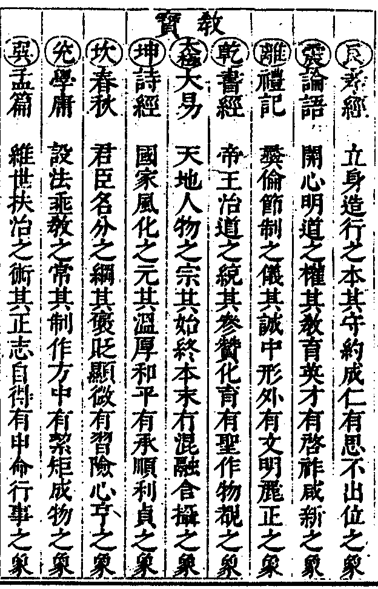
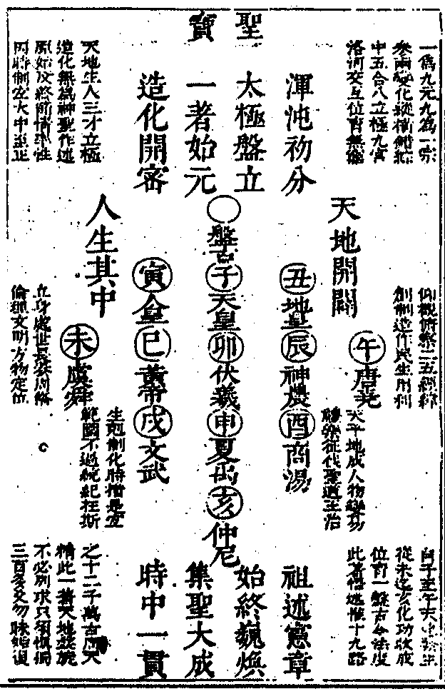
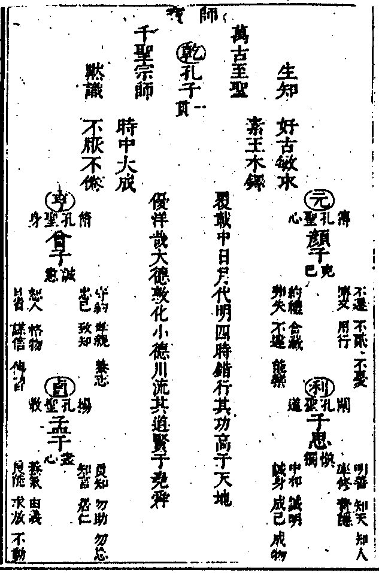
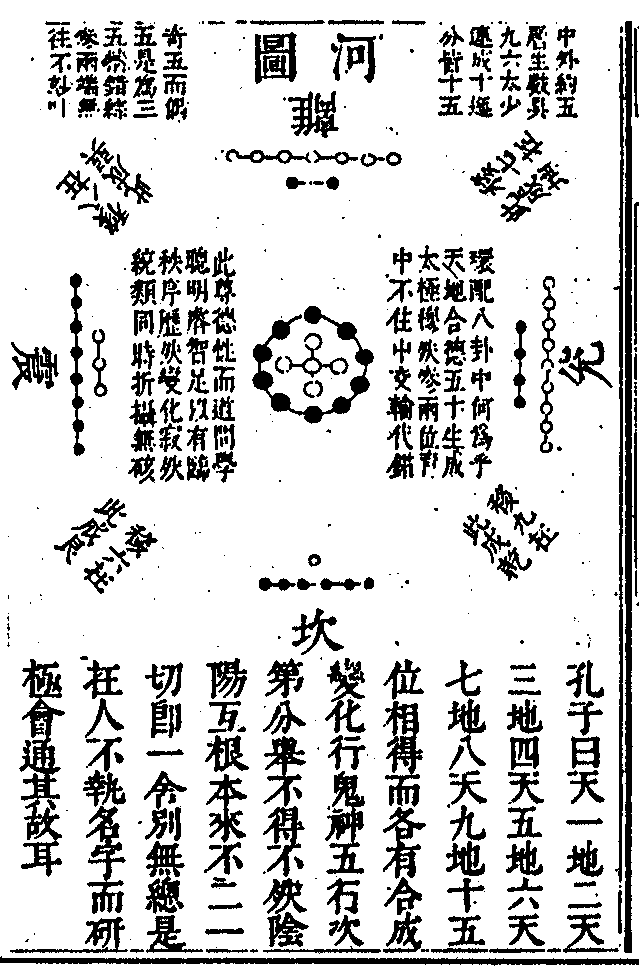
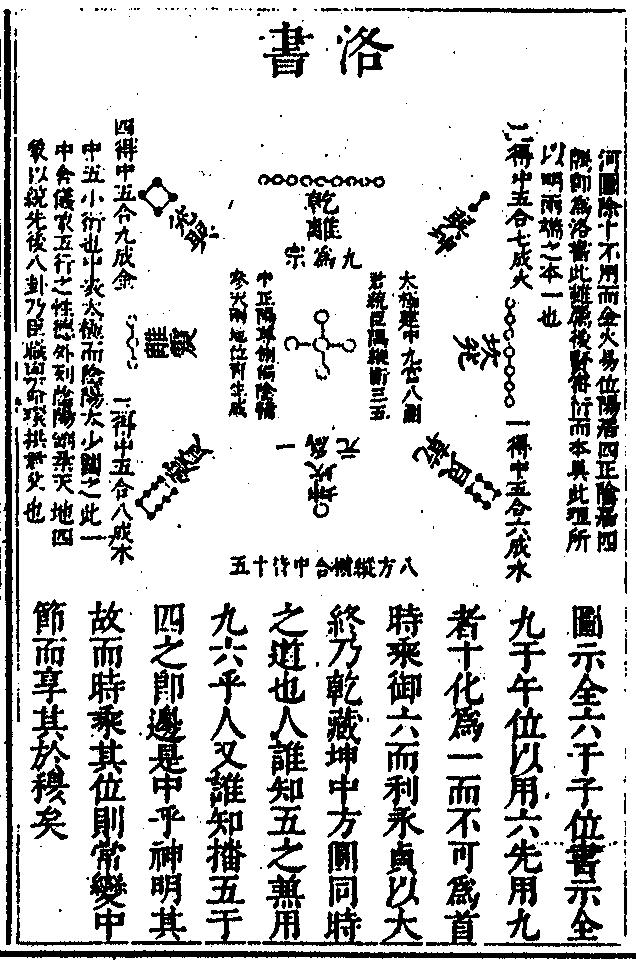
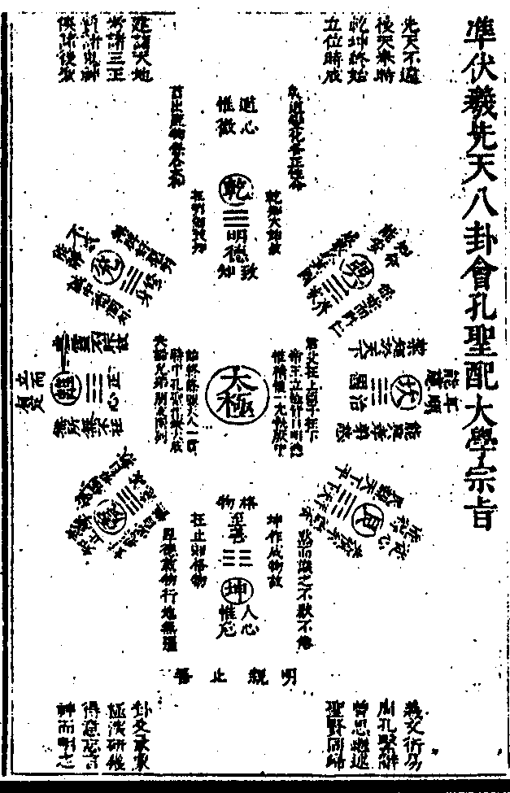
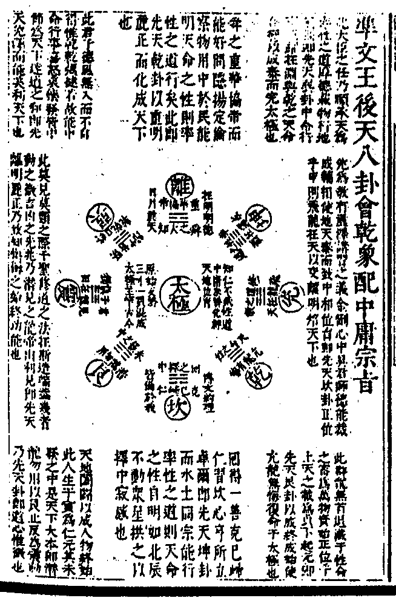
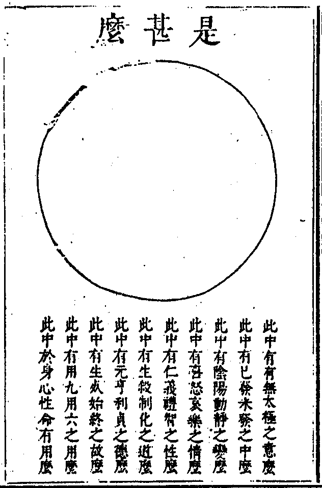
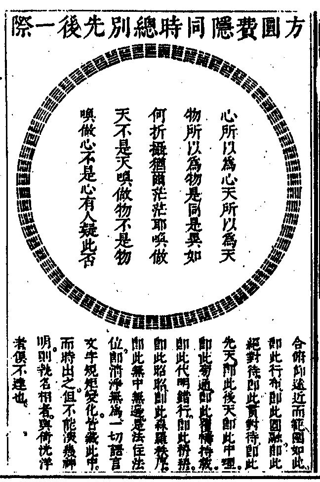

嘉興大藏經 第34冊
No.B311 天界覺浪盛禪師全錄 (33卷)
【明 道盛說 大成．大然等較 後附杖門隨集】
第 33 卷
天界覺浪盛禪師全錄卷之三十三
雜紀
學庸宗旨
大學總綱只在明明德一句。其親民止善二句。只是完其明明德之功用也。其原始要終之血脈工夫。全在致知格物四字。此四字。只當在本文上看教貫徹。不必別尋枝指也。果能貫徹此四字。則明明德於天下能事畢矣。豈更有內聖外王之道學哉。何則。自古帝王。若無格致之功。則與人同在昧昧。安能明明德於天下。所謂天生蒸民。有物有則。民之秉彝。好是懿德。雖則人皆性具明德。莫不有知。惟是聖人學道。始有致知之功。知即明德之明也。致知即明明德也。即顧諟天命。克明峻德。皆自明也。如無聖人之學。推而致之。誰能知吾明德中之意當誠。心當正。身當修。家當齊。國當治。天下當平哉。人皆性具天則。莫不因物而用之。惟是聖人學道。始有格物之功。物即明德中至善之▆則而隨處皆見也。格物者格通其故。而止於至善之天則也。即敬止帥仁絜矩之道也。如無聖人之學。止而格之。誰能使吾明德中之意必誠。心必正。身必修。家必齊。國必治。天下必平哉。所以不曰致知必先格物。而曰致知在格物者。須推明德中至善之天則。纔是良知。以顯良能也。又不曰知至而后物格。而曰物格而后知至者。正以平心窮理。神而明之不為物蔽。亦不廢物。故能止明德中至善之天則。纔是良能以顯良知之至也。所以大學之道。是知能不二之全德也。在明明德是先致其知也。在親民。是致知在格物也。在止於至善。是物格而后知至也。知止是知至而意誠也。止而定。是心正也。定而靜。是身修也。靜而安。是家齊也。安而慮。是國治也。慮而得。是天下平也。如此致知。纔是使無訟。纔是毋自欺。纔是自慊。纔是慎獨。纔是必誠其意。而德潤心廣也。如此格物。纔是大畏民志。纔是如惡惡臭。如好好色。纔是好而知惡。惡而知美。纔是藏身以恕而能喻諸人。纔是同民好惡。為天下絜矩也。自天子以至於庶人。壹是皆以致知格物為修身之本也。所以致知即明德。格物即親民。格致合一。即止於至善。康誥章。首舉聖帝明王。皆不外此明德。三代之君。皆能自明其德。與民相親。故親之而已。傳中以桀紂失其為君之德。不能親民。且陷民於濁亂。故湯武出而新之。蓋新民即新君也。新命即自新也。是故君子親以處常。新以處變而無所不用其明德至善之極也。邦畿丘隅章。正引之以明知所當止。如文王乃真知止者也。緝熙即明明德也。敬止。即止至善也。為人君臣父子。與國人交。皆得所止。即親民也。此非三在之宗旨乎。其次如武公道學自修即明明德也。恂慄威儀。即止至善也。道盛德至善。與賢親樂利。即親民之不能忘也。於此亦可曲盡其微旨矣。至於聽訟。乃格致之功也。迷亂之情。莫過於訟。內則意之善惡不分。外則民之爭搆莫決。皆是訟也。能通天下之情。以定天下之志。非知之至。物之格。何能必也使無訟乎。故誠意章。以毋自欺為致知點眼。以惡臭好色為格物定衡。夫自慊莫慊於毋欺。意誠莫誠於慎獨。慊則惟自。欺亦惟自。然小人揜著一念。明知有善可好。不善可惡。并亦無能自欺。正良知良能不容泯滅處。豈待十目十指。其加嚴乎。此德潤心廣。必誠其意。是皆格致之力也。夫格致。誠意之功也。誠意正心之用也。正心。修齊治平之體也。此三者同德異事。雖分不分。蓋意者心之所發。發非格致而不誠。心者意之所主。主非意誠而不正。心主正則發與未發皆得乎中。而不偏於有無。故有所則偏於有矣。不在則偏於無矣。身心各偏何從得正。內外無偏則心自中正矣。此孔門傳授心法之秘旨也。自天子以至於庶人。若不深明此體用功。以何為修身之本哉。蓋一身之好惡。關家國天下。一有不修而辟焉。則家不可齊矣。安能不出家。以孝弟慈而成教於國。以及天下乎。正以心誠。則好惡胥正。而民聿從。堯舜之治治以此也心不誠則所令反其所好而民不從桀紂之暴暴以此也。夫齊家治國平天下。只在能推一人之好惡以及上下前後左右。即是絜矩之道。即是民之父母。故君子先慎乎德。慎德者慎格致也。格致慎則好惡明。好惡明。則人土財用。皆不悖於常道得眾得國足以保我子孫黎民矣。又何有命過拂人之性。與小人不以義為利使菑害並至以亂天下之治哉。誠意章以好惡別君子小人之慊欺。即平天下。亦只以好惡定君子小人之義利。此吾所謂格致為原始要終之血脈工夫正於此可以見大道之學之全功。在能知止於至善以明明德於天下也。
湯斯祜曰以明明德為顱。格致為目。好惡為骨。即三綱八目。不煩註疏。一經九傳一齊挈出。
一部中庸之大宗旨。全在性道教三句性之一字乃天然本有不屬修成。特標之為宗本也道教二字。乃屬率修。而率修之功全在慎獨致中和五字。蓋性非率而天命不中。道非修而性命不和。中和之道。非慎獨不致。提起慎獨。則率修之功在其中矣。子思作中庸之意正見得天地人物不中和。則不能成位育。以使各正性命。致中和之道。非慎獨之功不能。慎獨之旨。非修道之教不知。修道之旨。非率性之宗於天命。則無本是故率修之宗旨。全在不睹不聞處以慎其獨。而不徇喜怒哀樂之情。以致中和則天地人物皆得位育。而各率性命之正也。故其第二章首節。即提仲尼曰君子中庸小人反中庸。中庸即率性而中和也。反中庸即不率性而不中和也。君子時中。即能慎獨率性而無太過不及之道也。小人無忌憚。即不能戒懼慎獨。各自徇情。成太過不及而反中和之道也。故孔子曰中庸其至乎民鮮能久矣。此數等人。皆各有君臣父子之倫。皆各有智仁勇之德。日用倫常何曾須臾離此道。但彼未聞修道之教。未有慎獨之功。故習焉而不察耳。欲斯道之明與斯道之行。必須如舜之問察用中。回之能擇中和。服膺勿失。方謂之飲食其中。悠然知味耳。一有予智之心。正自陷於意見而不能擇守。安能如舜之大智若愚。回之大仁若訥。而虛下拳拳乎。此所謂中庸之智仁勇。終不可能也。若子路之問強。尚於南北有不相及。敢望君子和不流中不倚之強乎。素隱行怪之太過。偏執隱也。半途而廢之不及。偏執費也。唯聖者夫焉有所倚。而能依率性之中庸。此夫子不自居。看前之吾弗為。吾弗已。則知此實夫子始能之也。故夫子又提出費而隱。以顯天地聖人同一中和位育之道。本乎最微。而夫婦之愚不肖。可以與知與能。此正聖人如天地之能與鳶飛魚躍。各遂其天命之機。人能上下察之。豈不與聖人天地同其大哉。故君子之道必造端於夫婦之能知能行。始能察到聖人至誠神化。與天地之化育同功。真費而隱也。夫如是。則天地本無知能。所可知能者。時行物生。鳶飛魚躍。各遂其趣。即天地之大德。即生生不易之機。即至誠無息之化也。人能如此察到聖人與天地相同處。則聖人亦無知能。所可知能者。與夫婦同知。夫婦同能。使彼各遂其倫常日用。正是求己治己。以人治人之道。初不曾以君父兄朋求全責備於子臣弟友也。此夫子之求未能。正如天地之有所不知。有所不能。始能與人物同其化育。而相忘於至誠之大道也。蓋此費隱之道。原不遠人。惟戒懼慎獨。反求諸己者之言行相顧。素位自安。則自不願外。自無怨尤。無入而不自得焉。此雖於費行隱而實於隱行費也。夫隱之費。微之顯。即造高遠自卑邇格父母自妻子也。豈非鬼神之德。誠之不可揜者乎。不見不聞。孰為體之。上下與左右之如在。孰為使之此處是真隱微。真見顯可見鬼神即獨。獨止一誠。誠不可揜。即是致中和而成位育。其惟舜之大孝大德乃能感天地。徵鬼神而受天佑命也。蓋舜能以至誠慎獨求己盡孝不求於父母兄弟所謂行隱於察以至察乎天地鬼神。而德位與天地化育。參同神化又豈復有遺憾乎。其次則莫如文王也。文王亦以至誠慎獨而求諸己。不求君臣父子。而自能純德如天。使武王纘緒而有天下。使周公繼述成文武之德。其達孝之道全在有志可繼。有事可述。所以制禮作樂。事帝祀先孝無不至。是非文武周公之慎獨而致中和。成位育乎。然此舜文之道。皆是誠者。自誠明謂之性。乃天之道也。所以不勉而中。不思而得。從容中道。因性而垂教於天下者也。此下哀公問政。孔子以文武之政具在人舉。正是誠之者人之道也。使其擇善固執。因教率性而正天命也。故先告以取人以身之道。須知人知天。以三達德。行五達道而列生知學困。安行利勉。為修身治人之本。其為天下國家。提九經為要領。其行九經之本又在一修身。故又告之以誠身明善。必學問思辨篤行。而後能致此中和之道也。故惟至誠而後始能盡己盡人盡物與天地參。然則必須次第推而致之。始能曲盡其誠也所謂曲能有誠以誠則著。是能盡其性也。著則明。是能盡人之性也。明則動。是能盡物之性也。動則變。是可以贊天地之化育也。變則化。是可以與天地參也。故唯天下至誠為能化。如此又何國家之興亡禍福。有不先知如神乎所以誠非自成自道乃成物之終始。為可貴也。使其不誠則天地人物之幾亦息矣。何有博厚高明悠久之可徵哉如此則為物不貳之獨。生物不測之中。豈不可以一言至誠盡天地人物之無窮廣厚乎。蓋天地。人物。統於一誠而合於聖人之至誠。於穆不己。所以為天之至誠。不顯之德之純。亦於穆不已。所以為文之至誠。大哉之道至育物峻天必須待至德之人。始凝至道。豈可苟哉故君子尊德性而道問學。知性命也。致廣大而盡精微。知天人也。極高明而道中庸。知修道也。溫故而知新。知慎獨也。敦厚以崇禮。知致中和也。知此則不驕不倍。既明且哲。何身之不可保哉。然愚賤不知聖人修道慎獨之教。故無忌憚而自用自專。又不知聖人率性中和之道。故儹越妄作。而災及其身。可不慎乎。是故非德位時之三重。安敢議禮度文。與斯民同寡過乎。此唯明善誠身之君子。參天俟聖。為世所信從。始能永譽於天下也。繇是推之。自生民以來。獨有仲尼。乃為道教之主。天人之師。故能祖述堯舜。為中道之正始憲章文武。為和道之正終。小德川流大德敦化。此仲尼與天地之所以為大也。夫至聖之至誠。有不聞之聰。不睹之明。不顯見之睿智焉。於獨中而正己。於有臨而正天下。故能溥博淵泉而洋溢尊親。此亦唯仲尼之至誠。足與天地同其神化也。亦唯天下至誠慎獨。為能經綸大經。立大本。知大化。故曰配天至誠至於配天。又焉有所倚乎。所謂達天者正於慎獨之中。闇然而日章。非的然而有疚也。故於暗室屋漏。自能不動而敬。不言而信。非不顯之德。中和之至。安能使百辟其刑。篤恭而天下平哉統而收之。不外於慎獨致中和。返於吾之至誠而神化於不睹不聞。無聲無臭。以達上天之載。天命之性。為萬化之統宗也可見天即是性。性即是誠。誠即是獨。慎獨者。人盡而天不能外。故自天而之人誠之者。則自人而之天。凡人不知。藉聖人始知。故言教聖人之道不遠於人。故言道道之大原出於天。故言天豈非聖人立教。知天知人。天人合一之原本哉。
湯斯祜曰。發明天人合一。頓漸二門。俱可不立。
戴記四十九篇。先儒程朱獨表章大學中庸二篇為之章句。遂與論孟列為四書。於是聖門相傳授受之心法。其旨具備。宋儒之功。所以大於漢儒也。二書同異。亦有可得而言。大學言德。中庸言性。大學言格物。中庸言致中和。大學言知。中庸言能。大學言止。中庸言行。大學言治。其言近而顯極鉅而無外。中庸言道。其言遠而微。極細而無間。此其異也。大學言慎獨。中庸亦言慎獨。大學言至善。中庸亦言明善。大學言誠意。中庸亦言誠身。大學言本。中庸亦言大本。大學言仁。中庸兼言仁知勇。大學言恕。中庸兼言忠恕。大學言齊家治國平天下。中庸亦言夫婦子臣弟友九經三重以及篤恭而天下平。此其同也。大學言大。雖身心意知之事不為小。中庸言庸。雖鬼神百世之事不為奇。大學始人而終天。故明德新民以至於新命。中庸始天而終人。故天命率性以至於立教此其同而異。異而同也。雖然。舉世童而習之。白首而不窺其閫奧。矧夫三教既分末流逾遠。詘佛而伸儒與夫抑儒而崇佛者。其徒若東西易轂。燕越背塗交馳而不知所極。孰與論宗旨之同異哉。徑山覺大師。植根香國。授莂靈山三乘夙圓。十地齊攝。雷音轟於震旦。法雨並於曹溪。拈花擊竹無非微玅之宗。豎拂擎拳。盡是神明之教。顧心通萬法智會一原。不以佛道之幽玄而笑儒門之澹泊謂此學庸二書。非獨治世之準繩。而亦出世之心印也。為儒不可不知。為僧亦不可不知。特自拈為宗旨。以示後學。其上座屬余為序。余不辭固陋。竊效丹鉛。輒弁數言於首。大師尚有論易論學及講學道治諸篇。其言皆中正易簡。始終條貫。揭明天人性命之宗。而無玄虛似是之說昔張無垢為論語作頌。乃儒而禪也。今大師宗旨。直起孔顏於旦暮。覿曾思於同堂。能發程朱諸大儒所未發。佛學之有功聖學。詎不於此見哉。丙戌居廬復菴弟子楊廷樞題於真如塢中。
圜中衍義儒宗三寶圖
渾沌未分時獨賴此盤古老子。出大手眼而開闢之於是兩儀既判。三皇之才始立。五帝之行始全。化育之道始足至此天運。如日方中。其有生必有剋。人物始得反情復性故禹以平水土而成天地之功。湯武以用征誅而應天人之變至周末有孔子。始終一貫以收拾造化之權。而天地人物之道至此大備無復加矣夫古人之所以為聖神者。直在自為之而已矣今人之性靈中莫不有一盤古。統此十二聖心。周旋于時中。苟能覺察之。則於生動時。不為狂陽發散其精氣且能慎獨以致中和。至死靜時不為幽鬼沉迷其誠明。且能率性以歸天命。夫如是又何古今之同異哉因倣出世法。特揭出聖教師作三寶為天下萬世之當皈依者。為圖以配四衍義誠儒宗始終之標旨也。有具手眼君子。當必有自寶者在。
戊子師在太平圜中。拈心經金剛後。又著河圖洛書先後天八卦衍義而先作三寶圖歸于一圓圖大哉旨乎。正欲人即行布是圓融。而與民同患乃其所以為至密也。小子入候錄此以歸。學人大中陳丹衷識。
教寶

聖寶

師寶

自開闢來神聖繼天立極參贊位育者始終不過盤古統十二人如一日有十二時一年有十二月推之萬古常不忒也特立此圖懸象昭示則吾與萬世聖神儼然同堂未散可不自觀自察而奮勵之哉今人所以不能為神聖者以心幾不能精一師法不能時中知行不能大成所以人心愈殘治道愈亂世情愈迷終難反古也神聖能善用易道而自治治人以知陰陽偏勝而成迷亂乃使剛柔相濟水火交資故性情中和而天地化育也使人能一心皈依此聖教師于十二時中不至偏勝則人心可純道術可正長夜可以復旦矣孟子云養心莫善于寡欲正以世人多欲而自雜亂故不能帥一其志氣以充塞乎天地所以古之欲明明德於天下者必先專其格致而寡其所欲始能充此大欲以從心而不踰矩也噫此九一之宗庸詎非萬古寡君寡師之所以寡欲寡過于天下之道也哉。
人者天地之心人不立極而用時宜則立天之道立地之道又是誰耶易曰天下之理得而成位乎中溥博淵泉而時出之時中之幾深哉神哉十二時藏閏為十三則數度之幾也門人大然識。
河圖

河圖衍義
河圖洛書各具先天後天體用互相參兩錯綜而成太極之性德即人心中皆具太極陰陽五行互相生成秩序變化本性天然如是也如為君為師者必須于未發之前省察一念纔動皆當互具五德而不偏陷則能致中和而參贊位育使天下古今皆得成此性命之正矣。
河圖天包地也一六三八二七四九運于四方五與十居中以圓涵方天道下降陽生于下始北次東故一與三生數居之自內而外歷南終西故七與九成數居之地道上升陰生于上始南次西故二與四生數居之自內而外歷北終東故六與八成數居之。
一六水表智之淵二七火表禮之明三八木表仁之生四九金表義之成五十土表信之蘊此概也一行各具五行一德各具五德隨舉可見而言不頓彰故不得不配以表之乾止言四德而藏中旋邊元亨利貞以信土而居智水之位下襲即以上律而乾知大始之智以統之故曰乾元亨利貞孔子以春夏秋冬表之而坤以西南東北盤之實則縱橫上下無中無邊而宇中有宙宙中有宇合觀而總別一際矣聰明睿智至誠有臨非天藏中土人受中生一點靈明本不可欺為信知大始之乾乎文理密察智能折攝蓋致廣大必盡精微蒙泉習坎潛用之幾貴過冬關而十二時皆子時也齋莊中正禮以相見合內外而適品節克復之後交泰文明矣寬裕溫柔春和長養帝出震而轉巽風金木相刑以克制為成器而學問冥升全樹全仁享其花實矣發強剛毅義能裁成執精一而措時宜金剛純粹即博即約麗澤收成大矣哉大抵卯酉日月之門仁包義決所以藏智用于北而顯復禮于南也子午南北之樞智崇而潛于下學禮卑而峻極光明所以主春秋之中和而享其生成也天藏土中人受其蘊中以旁通坤艮補二氣之有餘不足而燥潤交濟號曰環中苟舍四時寧有歲乎此河洛以中五約示而統類皆備惜人習不察耳。
就天地生成之數而衍之一多費隱先後玅協顯仁藏用代明錯行中邊回互歷然寂然先聖表出使人觀玩引觸原始反終而慎危微精一之幾也德性本具但不能終日乾乾以自尊之修辭立誠而問學知味耳去聖時遙賴此神象微言或有觀感而興起也夫。
洛書

洛書衍義
洛書以九為宗以中為體以一為元一是陽之始智水初生為始覺乃潛龍之來復三是陽之少仁木方長為自覺乃見龍之帝出七是陽之壯義金正堅為覺他乃惕躍之乘時九是陽之終禮火還原為滿覺乃亢龍之用九上位乃後天離先天乾聖人居之則尊高無輔小人居之則過亢傲驕是以動而有悔惟能用九使天道下濟則位育光明矣故五為陽之中信土大成為正覺乃飛龍之出治蓋陰為陽所統陽能始終用九以見天則陰必能始終用六順承天行故陰以從九君而喪其陰朋為陽之用臣以終于東北之有慶二是陰之始而側居西南以九陽終于午中而陰承午中生之為姤而側居傍隅在河圖雖居正午而在上九之下為臣奉君之象故乘得陽火之餘如月之無光以承日之陽為光故地二屬火于洛書側居西南為先天巽後天坤皆得臣子遜順之義以非禮勿視輔禮而履霜四是陰之少側居東南為先天兌後天巽以非禮勿言輔仁而括囊八是陰之壯側居東北為先天震後天艮以非禮勿動輔信而含章六是陰之中側居西北為先天艮後天乾以非禮勿聽輔智而直方十是陰之終伏而不見在河圖則具十而輔五居中在洛書用九而攝之故十陰有美而推之于君不敢自居為德蓋臣子為股肱之任惟暢于四支而成事業故孔子以大哉乾元之君稱唐堯虞舜能則天以至哉坤元之德稱泰伯文王能忠孝而天尊地卑八卦成列於人倫之道各有定位矣吾以尊火為宗蓋火乃乾陽上載之九無極之元是天之明命為先天資始之主潛于太極為九五之黃中以能通理而資生萬物故後天之陰陽五行皆從此為時出故中庸以至誠為經綸天下之大經立天下之大本知天地之化育所謂肫肫其仁者指此中體為潛龍勿用之地是未發之中也淵淵其淵者是此陽龍之進德修業欲乘時而上升也浩浩其天者是此龍飛于九五與天地合其德位而化育萬物正為君以治天下為師以教天下之時也學聖人者必以上天之九為宗太極之中為體以坎中一陽為元則致知慎獨不昧天地之心矣故古之欲明明德于天下必先自致其知能知此天一之智水所自出則能生仁木生禮火生信土生義金以至全五性之德今人不能逆知未發之中安知危微精一之本于慎獨哉能知獨中有此神明之火為吾上載無聲無臭之天心則知天道必須下降為二五之衷然後溥博淵泉而時出之則可為民秉彝之有物有則也人既不知未發又烏知方發之仁義禮智為喜怒哀樂而發皆能中節哉十化為一用九于中圖四破而書加八邊常顯而中常隱河洛本不二也吾先就人指之九為天命本覺之性中為率性之德一為慎獨之幾雖然如是須時時觀象玩辭返躬省習以至得意忘言神純功化千聖不傳之密天地造化之權皆備于我九一之宗旨矣。
準伏羲先天八卦會孔聖配大學宗旨

準文王後天八卦會乾象配中庸宗旨

先天明體而用卦爻自內而生後天明用而體卦爻自外而生此太極兩儀四象八卦及六十四爻爻皆具太極體用在人之性命心身與物形世界無論太小正偏亦莫不全具太極體用以人不自知故念念昧此體用惟聖人於念念爻爻知慎此獨故能率修而參天地於念念爻爻精一此中故能致格而享天命也。
有畫以後皆後天也先何在乎神明者即此後天而先天不違也綱宗既明其本自立時行擊節善用者誰世以羲文分先天後天八卦久矣故因而衍之。
是甚麼

聖人未作易此易理具在天地造物人生性情之中既作易則天地造物人生性情具在易理之內既已具在彼中何更作此易乎善哉正欲人知作易之故也天地造物是氣化所成雖歷古今之變而不忒人生則有性情私欲或變為狂為迷為僭為逆有至滅身滅頂敗國者聖人憂之故法天地造化之無私準陰陽變易之不忒設象繫辭使人觀玩以返情而化私率性以合道而還天命之真常是則聖人之功高天地以能設教也易者古今設教之祖也易不設太極而首設乾坤者太極乃天命真常之體本無為也人生之私欲以情也乾坤能率情于性則太極本自天然于其中矣是故設乾坤以明天地人物因性情之動靜為變易性元不變而情變情有動靜有善惡有吉凶有逆順以故繼善官天而設教祗是收攝調治其情欲使千變萬化不失其性之本常而已以故乾坤為八八始終綱領乾坤綱領惟在用九用六之一用字能用此一用字則千聖設教之本率性之功皆在是矣百姓小人又何知有此用哉如乾初九不能用九則潛龍既為妄所用不能慎獨于未發則不能于九二出見有利見之文明也二不能用九則于三不能乾乾行事以至于躍也四不能用九以進退修德則不能于九五飛天而出治也五不能用九則不能于亢而無悔也上亢能用九則不以尊貴自傲禮絕百僚而為頂墮又能以乾道下濟為復泰姤坤以承順天行也坤初六不能用六則不免于履霜為堅冰如臣子不能以微漸自戒而弒逆滅身矣惟初六能用則于二為直方于三為含章于四為括囊于五為元吉于六則無嫌疑也龍戰之象天道人事皆有勢極之候惟藏用九于用六者能知而調御之故曰六十四卦卦卦是一大公案爻爻是一小公案能用于未發而神純者乃大聖大賢為元亨利亨也用于方發而中節者乃賢人君子之吉利貞無咎也用于已發而遷改者乃善人平人可悔吝之災不害也不能用者則無忌憚行險小人小則為悔為吝大則為凶災為敗亡也蓋有百姓之慎修焉有宰輔之慎修焉有善人君子之慎修焉有大聖大賢為君為師之慎修焉有一世君師之慎修焉有為天下萬世君師之慎修焉此作易之諸大聖蓋與天地古今而無息者也其道甚大百物不廢懼以終始其要無咎此中條理歷然寂然誰是靜正而神明其故者乎。
靈山公衍
李盤問曰伏羲止畫方圓圖不說太極何也師曰大易不說太極首說乾坤者太極不離陰陽離陰陽無太極也舉陽則陰在陽中舉陰則陽在陰中惟乾坤無變易純一統天其餘六子則破體不純而有變易然亦不離乎陰陽太極欲深明此宗旨須先明太極為第一層陰陽為第二層有悟一不成二不是者乎不必語矣此話且住今就第二層中當約二儀四象八卦為內三層十六卦三十二卦六十四卦為外三層是謂六虛實無內外過此已往則重重涉入巧曆所不能計也雖然饒有千層萬層祗是兼三才而交其三其兩秪是第一層中沖深含攝之寂感也寂感之妙即出于如來藏心能妙悟之何分儒釋郝子荊曰如我輩圍老人坐豈非各各占一卦耶師曰人人物物各具大易全體不特一身具一太極即一毛孔亦具一太極汝纔發一兆便落一卦動一爻矣汝一念未兆即伏羲神禹文王周孔亦無處窺測得汝亦無處彖象得汝亦無一毫端可名太極者況彼孫臏鬼谷空搖龜殼其奈汝何所謂吉凶悔吝生乎動幾者動之微也幾微不動何生死吉凶善惡苦樂之有是故聖人慎獨於未發絕對待於睹聞聲臭之前今人既不慎獨則隱微無主肆念妄行徒被他卦爻彖象吉凶悔吝之所顛倒錯亂而已是故聖帝明王之道皆取法于易以致中和易有不易則得中不易有易則得和惟堯舜能允執厥中而和平故能知人心之危道心之微危微乃出入之幾即天人之際也可但以人欲為險危解耶天而不人則能位而不能育人而不天則能育而不能位惟位乎中則能育乎和惟位乎和則能育乎中吾嘗曰堯舜之前法度不齊荒唐不可述也文武之後法度大亂支離不可憲也惟堯舜為中道之正始故孔子祖述之惟文武為和道之正終故孔子憲章之上律下襲于易已見河洛卦策皆本然之條理一貫可徵者也俯仰遠近莫不同然所謂法住法位一切見成代明錯行覆載本具豈人力可造作哉孔子生于周末功高堯舜文武正在此時顏曾思孟繼其後使孔子之道大明亦不愧為弟子三代而後無幾人能窺其門墻況有能窺其堂奧者乎盤再拜請曰孔子之集大成猶今日吾師之明大易也吾師開佛祖之面目儒者未見為奇惟吾師開周孔之面目儒者乃見為奇幸勿吝慈悲再示大易之道了此身心性命之法師曰諸公知大易之道本末不異體用一如乎體中有用人不能見其用感而後見其用用中有體人不能見其體寂而後見其體所謂寂然不動體也心性之理也感而遂通用也生死之法也即感而寂無生死之用不為心性之體即寂而感無心性之體不為生死之用感而非感生死寂然寂而非寂心性明妙但世人只知後天六層八八六十四卦盤面上趨避進退不知即卦即爻上透底一針刺到根柢先天一層太極上一幾未動之先則本無陰陽八八淆然也惟吾真宗不於盤面上橫蕩而行遇一卦遇一爻只是一針透底則彼吉者不能吉凶者不能凶陰者不能陰陽者不能陽處處逢歸路頭頭達故鄉一根既返源六根成解脫又何根根塵塵非嘗住真心哉又何千波萬浪非一水千器萬皿非一金哉能如此透悟根宗先天自我立命而天不違後天自我順命而奉天時矣雖然不可以我透針之言瞎錐亂刺不向自己性命上透脫如今人之用棒喝是底也一棒喝非底也一棒喝更無展事投機生殺與奪之妙如此瞎亂相欺則千古佛祖聖賢之大經大法皆是一個儱侗東瓜禪盲瞽泥塊法何有精一微危之妙道能致中和位育乎嗚呼安得洗心于密極深研幾者相與發明此道以報先聖之恩也耶諸公大喜禮謝。
伏羲圓圖
伏羲止畫此圖未嘗標出太極孔子標出之而隨即曰一陰一陽之謂道繼之者善也成之者性也祗如此圖何者是道何者是善何者是性耶綸之則一卦有一卦之時義一爻有一爻之時義絲毫不亂彌之則渾淪周遍隨舉一物皆全具也神無方而物有則本自方圓同時非默成神明者孰能知之。
方圓費隱同時總別先後一際

天界浪杖人全錄序
何為而有天地何為而有日月何為而有山川草木人物牝牡之類此理耶事耶誰為之甄陶點染而色相萬殊不可名象不可方物不可治齊耶又誰於不可名象中而強名之曰天地日月山川艸木人物牝牡分之則庶其類而合之則一其致耶又誰於不可方物中而方物之不可治齊中而治齊之此伏羲神農堯舜禹湯文武之所由作也故君相者所以裁成天地之道輔相天地之宜以左右民者也自天道有所不行不得已而立之君君道有所不行又不得已而立之師君以佐天道之窮而師又以佐君道之窮誰為為之道是也誰為任之孔子是也乃孔子之道亦有時而窮而佛氏之教又起而翼之斯道遂無復有遺恨矣斯道無遺恨而天地始有遺快也說者謂佛氏興而孔子之道衰不知孔子之道不衰於秦漢之後而衰於戰國之初不衰於佛氏之興而衰於異端之盛異端者誰楊墨鄉愿之屬是也今天下之學鄉愿者眾矣學楊朱者又眾矣即求一墨子且不可得乃硬坐後起之佛氏以當之曰此即異端也豈不冤哉或曰若如言則儒者之說非乎曰果為程朱之儒則闢之可也不闢亦可也程朱懼儒門之淡泊也故闢佛以存儒然使天下之儒皆如程朱則佛且不作矣又何闢焉天地仁愛之心知後世之儒必不皆如程朱也故復生一佛教以翼之佛氏之有功於孔門者大矣儒者苟不能如程朱不必闢佛且不妨學佛學佛而有得於吾道自有妙協之理非必捐棄父母妻子披緇入山而後為佛也但今佛氏之教抑又窮耳或執滯於因果輪迴或偷息於幽閑冥漠豈唯未窺其堂奧亦且未入其籓籬也豈唯士大夫即秉其傳者講師座主既死於言下拈椎豎拂亦逐於聲影求一大徹悟大休歇人曹溪而下若德山巖頭汾陽慈明之流已如披沙揀金又安望其立言垂世若釋迦當年與孔氏之教並垂不朽乎明啟禎間覺浪盛禪師起於八閩嗣法東苑決幾壽昌手挈祖印肩荷佛乘年三十即開法於興化道風遠振海內傾仰名公鉅卿莫不入室扣擊俯首皈心而笑峰然藥地智二大士則以宰官身現比丘相稱師之嫡骨真子也豈不盛哉夫師於佛法凋落之日能使斯道復興天下士大夫氣宇如王不可一世者莫不折節師事之以至兒童婦女販鬻屠沽之流亦莫不知天下有覺浪和尚者蓋由其雙選之法足以佐斯道之窮也鳴弱冠時讀唐荊川左編始知有宗門下事遂讀之不忍釋手及見洞山价祖傳有喜則不無譬如糞掃堆頭拾得一顆明珠話胸中躍然然無從質問偶洞山募僧至示以孤岩和尚語錄乃作書舉以問岩岩答云巒峰奇秀鶴不停機余於此有省後參煦杲照禪師相隨數載每於一棒一喝中見臨濟之大機大用壬辰客白門謁杖人於天界蒙許入室咨決種種妙論快所未曾從此廓然四達於儒釋分合之際及古人言句了然無疑矣故自六經四子之書以至三藏十二部諸子百家與神仙養生之術略一寓目略一拈提即有水乳之妙然後知杖人之為我至也嗣後見諸善知識不可勝記然更求如杖人者未有也辛亥春入青原與藥地和上坐語移日和上命作杖人全錄序余以杖人語錄遍天下諸先達長者如梅長公李夢白輩序之詳矣余小子復何辭但以余親見杖人於二十年之前今讀其全錄於二十年之後宛若面談即不能如梅李諸先生親炙之久然視彼聞而知者則有分矣故不辭固陋輒弁數言於簡端使天下後世知釋迦而後又有若杖人者振起斯道於不墜且合儒釋為一家視今日諸狂禪瞬目揚眉裝神嚇鬼者不大相徑庭也哉有志者學儒學佛當必知所興起矣。
杖人翁全錄集要序
于百千光中日為光大于百千水中海為水大于百千善知識中浪杖人為善知識大此非余之臆說也余嘗聞諸竺老和尚而知其不至阿所好也浪杖人斯可以為過量大人已乎然而人有過量語無過量惟及量耳蓋由乎度越尋常謂之過由乎適如本分而要歸切近謂之及之兩也其實一致今夫杖人其書滿家其門目至于百有數十豈不曰文彩全彰乃終日言而盡道亦終日言而未始出吾宗此則南華聖人之先得其然者矣如徒以簡帙褒重有類夫取精多用物弘之為貴者即彼怪尤或能勉爾顧狐之嗚呼似人聲非人聲也曷足聽聞今日者獅絃既張毒鼓更震一唱三歎偏正回互靡不逢之嘗試攬其篇章以循其經緯本末雖使九變復貫畢竟語忌十成洞上流風于斯固為增華加厲焉耳且如潔淨精微易之教也先儒第謂之能不犯手安在其有喙三尺而必為前朝斷舌之才也乎若夫宋人立尊堯之題晉代高注莊之作則杖人亦嘗從同惟托孤一語于斯道絕續之際恫乎其言之不獨以資談柄也中天午運所不至與儵欻俱淪者吾言將繫其九鼎必如是而後可以至于精矣亦必如是而後可以至于大矣世稱文章卓詭但為名家其廣博而無涯際始為大家名家之不及大家甚遠即于不立文字而有文字從有文字而發揮其無文字者何獨不然此向來明教永明覺範大慧諸老之所由尚也麻三斤乾矢橛庭前柏樹子等雖曰咬嚼不破亦往往作避鋒藏拙之地有如文身句身一為無量無量為一即豈得于此躲根昔者三佛之門並高矣而漸成窠窟佛鑑佛眼座下有為狗子叫鵓鳩鳴者有覷燈籠露柱指東畫西者則佛果譏之且自幸其無是病夫狗子鵓鳩燈籠露柱無論不可為佛法恐併不可為世諦杖人書都不若是談性命則湥以出語事理則洽以該三教既與為總持兩戒復極其關切于是而欲以廉纖訿之不得欲以綿密稱之抑猶未盡是誠壽昌古佛之內紹而五宗諸大老之集成遂入藏流通進名家而大家由此其選也竊伏聞雙徑祖席群眾歸重奠以不遷此亦大日來仰大海來朝之常事已耳而今乎青原青原者七祖道場也自笑峰大師起之無可大師承之其山益峻兩大師固與竺和尚鼎足而全錄集要之刻則無大師董其成無大師高足弟子為余好友洪浪遂興雙嶺以應之得髓之義及于膚功則是其為日光九重若海之前後左右際者不又多乎哉余亦在杖人子光孫水之列而浮游他日失所依歸顧十指中猶見佛面孟子曰予未得為孔子徒也予私淑諸人也爰恭無大師之命而序之其言有止亦姑以志其欣愧焉。
在道凡夫黎元寬法名興遠拜題
杖門隨集(附全錄後)
天界紀聞
三大恩人
丁亥清和積陰新霽偶過丈室適有少年求師開示師笑曰世間有三大恩人一切眾生當面蹉過不免辜負他甘墮下流少年問云何是三大恩人師曰極貧多病大苦添上個死字是煆煉我身心的大爐鞴千金難買萬劫難逢不向此中打破關頭巍巍堂堂做個知恩報恩頂天立地的好漢反視如生冤家百計求脫露盡醜拙將貪瞋癡種種毒藥滿口吞下縱饒得金高北斗五慾目恣也是生鐵鑄就臭髑髏諸佛拱手無可奈何窮究病根紙綠昧卻勤儉兩字或問止如勤儉中下根人亦盡識得師云世人作勤盡是業識世人作儉一味慳毒今為真勤儉下個註腳曰公勤而公則為禹惜寸陰周公待旦儉而公則為顏子之庶乎屢空武侯之澹泊明志死則死盡一切偷心根塵消隕六用不行庶幾是動心忍性增益不能世出世大任一肩挑起不負三位大恩人煆煉我做人一番汝亦知勤儉公三字是化難生恩之造物佛祖聖賢總跳不出此三者秪如聖學博我以文勤也約我以禮儉也一日克復天下歸仁非公而何造化之有春夏博我以文勤也造化之有秋冬約我以禮儉也各正性命德合無疆又公到極處矣一切聰明男子遇此三大化難生恩之人若肯拽轉鼻頭來定知老僧不是賺汝薛正平紀。
孔子棒
人只知宗門用棒不知孔子善用棒而棒棒見血且無痕如君子之道四丘未能一焉開頭遮一棒直將人纔生下地來便打透也又散開棒打出四個未能來如父未能求子君未能求臣兄未能求弟朋友未能求先施卻先棒棒打著為君為父為兄為朋者而實棒棒打著為臣為子為弟為友者然而夫婦一倫不打著何不見此四者皆出於一夫婦乎孔子所以棒棒皆打著求己不求人則人皆有己所以明頭來也打著暗頭來也打著連架來也打著直走入古廟裏去如閨閤中夫婦在黑鬼窟裏也憑空打著呵呵痛快麼又誰知死版上孔夫子解打此活棒乎。
一字法門
孔子懼作春秋。即此懼字。能使萬世亂臣賊子懼。孟子為此懼故。能距楊墨闢邪說。使王道廓如。功不在禹下。一部中庸。全在戒慎恐懼中提出。此性道教底。廣大光明。震爍天地。小人無忌憚。又何知懼哉。懼正是小人良藥。能用此一字。即寸鐵殺人活人開天闢地也。如孝親孝字。恭己恭字。敬己敬字。皆千聖傳心之學。又變為孔子之言詩可以怨。怨字。莊生怒而飛。怒字。與孟子文王一怒安天下。怒字。皆是自心中創出造化來。變易天地人物。即此一字為吹毛劍也可。為塗毒鼓也可。為獅子吼也可。為九轉丹也可。若武庫中利器。但能用得慣。如一指頭禪。便一生用之不盡。千古人不能成大事者。只是不精一。雜用心。故寸鐵殺人之語也。須是大猛烈漢子始得。
拈重閬
薛正平少誦南華胞有重閬。心有天遊極愛其語與老氏合。三十輻共一轂當其無有車之用殆謂此也與學人語都不能了。適宣州翟孝廉羽侯禮師師云向南昌曾與君拈胞有重聞義尚能記否。翟悚然。余問當時云何舉似師云幼見雞抱卵。識得此義。卵殼中著頂空處。是為重閬。人疑其不足處。正其有餘處天地化醇生生之玅。盡從此出。卵胎皆然。卵特易見耳。莊生欲示人天遊於未始有物之初寄之重閬。故又云人之知者恃息歸根以踵。孟子表之夜氣。九萬里之怒飛以六月息。故云生物以息相吹。試觀世人負重遠行。氣急殺人。放下擔子。低頭合眼得剎那之息聳肩便起師作挑擔勢。中添邪許聲。復作歇擔勢。笑云為莊生盡情吐露矣。余聞躍然曰。今日因師得悟中孚一卦。乃大易關紐。坡公解易亦云卵生為之孚孚之。傳曰柔在內而剛得中。孰知在內之柔。坎一真陽重重包裹。流行兌澤巽風之中變化生焉。子雲之玄。從中孚而起良有以也摩耶夫人腹中。諸佛菩薩往來問法。又極重閬之虛空不可思量矣。於此悟入。則大衍之虛一不用。與叫不響山谷。一切都了。非師委曲譬喻。不能剖塵拈出師頷之曰子可謂善於引伸也周子無極而太極。與邵子未嘗有無而未嘗離乎有無圓此一句有同異否。智曰。人身頂腦虛者靈。醫經心不用而用小心。喉以管竅吐聲。鼓以閉空為響。艸木之核仁。皆兩片也而生命藏其中。誰知質測具通幾耶。曾格此否。
拈先著
世出世間法。只爭個先後著。易云幾者動之微吉之先見者也天下事原有吉無凶。不認得吉之先見。便變出凶來師少年有詩云大聖有隱憂。乃知天下故坐折英雄心。能先其後步。玅旨可參陳旻昭與一奕客到師方丈通云是國手也師笑曰我雖不善奕。卻識得碁中旨趣遂舉向詩。乃徐云世稱碁家國手。謂著著是先著。玅在先存結兩個眼地步若一個眼便是死局。太極之不死。玅在陰陽之交錯而不相奪。其陰陽之不死。全在太極非虛非實也。蓋彼未下子時已識得末後得力著子。便緩緩地放在冷處對局者不知其殺活在手。只管東衝西突到得應手不迭方悟其玅。已箭過新羅矣。故曰國手先著。玅在占得兩個眼地步。其後步自不可破也。萬法皆然。學易者謂之逆數沛公與項王之成敗。也只爭遮些子。老氏有言。圖難於易。為大於細。非識得後步。何以下手。第世人不易曉耳。唯十九行碁路上。幾點黑白子。將下未下處可以神而明之便是英雄。默而成之了向上句與末後句矣。一等拍盲禪。但問黑白未分前遮一著子落在何處。卻以掀卻棋盤者是。豈不為撥無因果之外道哉他又安知未分前在何處乎。旻昭勇躍。嘆為聞所未聞它日竹關又舉。旻昭因曰長生變勢。以三個劫而兩持。其幾更玅師笑曰人玅在兩個鼻孔便可合口而坐捏卻鼻孔時。能不開口吐气耶。
信近於義章
三代以上有孝字。無學字。蓋學統於上。即覺字即親字猶先天之良知能親切可為宗可以宗也。甚矣有若之似孔子也。既拈孝弟為仁之本。復從仁本中。拈出民生日用最親切處之親字。為禮義之宗本。孔子告哀公曰仁者人也親親為大義者宜也尊賢為大。親親之殺尊賢之等。禮所生也。夫尊親與親民。是皆因其天然而不失其民生日用最親切處。立出種種名。以為千聖制禮作樂所因之宗也義豈遠乎哉。信一近之。便言可復禮豈遠乎哉。恭一近之便遠恥辱。近與親對。而義與禮與仁。俱從近中寫來。乃是吾人最親切處。信因於義。恭因於禮而此禮義。又皆因不失其親。亦可立為宗旨。亦可與人師宗云爾非是不失可親之人也。唯識指出親見分。親緣緣分。言心外無法可作耳。後來子夏子游子張欲以所事孔子事有若。亦欲與商確舊聞結集遺言。如阿難現佛身說法。如是我聞。亦有與人師宗處。使此宗旨不墜也。曾子便拈出江漢秋陽。又無異九峰侍者。遍殺首座。此更有親切處。遂各建立。有子夏之儒。子張之儒。有若之儒。漆雕氏之儒而統遂散。百年而孟子出。提出夫子集大成。以收歸大統。反復歎見知無人。以聞知自許。而昌黎謂軻死無得其傳。有以也。余有感於因不失三字。與亦可宗三字。以見聖人制心制義處。學者之親切苦心處。故曰因包因果。宗包統類。統包破立。類包寂歷。親包親疏。主此者誰。惟善用心即得。
樂其可知
孔子聞韶三月不知肉味。曰不圖為樂之至於斯也看為字。不圖字上。形容豁然。此豈是悟得聲音哉正如香嚴聞擊竹豁然而悟。實不圖在聲音邊也。師摯是上流人。孔子欲就聲音中。指出向上所以為樂之宗樂其可知。非謂樂可知。蓋欲其知所以為樂之至於斯也。故告之曰。爾固自謂樂可知也。然亦知千聖未作樂之先。此樂從何而生乎。知樂之為樂。不知樂之所以為樂。若始作知其翕如。從之知其純如皦如繹如。樂至此成矣。爾之知如是止已。未始之前有翕如。爾知之乎。未從之先有純如皦如繹如。爾知之乎。先王作樂崇德聽之不聞。是誰於雷出地奮。而薦取夫子微意乎。莊生曰有成與虧者。昭文氏之鼓琴也。簫韶九成。成於歷山之號泣。洋洋盈耳。成於敬止之緝熙。若軒轅氏。何待張樂洞庭。七聖俱迷。大地變作琴聲矣。師摯於此徹去遂逃之無何有之鄉。不識者以為適齊云。
儀封人
封人見地最高。不惟荷簣諸人彀不及。即聖門高弟亦當避三舍。弟子中識見超卓。顏子猶謂不容然後見君子。如子貢卻虛擬一綏來動和功勳邊事。描寫子之不可及猶天之不可階而升。何異盲人摸象。乃封人一見尼山面目。便識得天載鼻孔想其平日憂天憫人一副肝腸。無處告人。天下無道久矣。隱隱想著個木鐸。自堯舜以來高懸天上。無人承當。卻落在孔子手裏。無限慶幸。措辭不及。便欲向二三子吐出自家肝腸。不免怪笑。諸人止具一隻眼。為得喪兩字熱顢。余故曰封人不特孔子之知己。亦天之知己。
晏平仲
晏子善交。得力全在與之一字。便有擇交不輕交不苟且意在。故能始終其交。久不忘敬。若於夫子。不免有累世之疑遂畏而不敢與交也。夫子識其短處不揜其長處。故特拈出想平仲雖好賢。定因石父告絕是以見賢益惕。執蓋同升。倘所交非壁立千仞之人不免曲江軟美一路。求其久而愛則有之。求其如臨父師。久而敬。不可必也雖然。交固難言善交如晏子。猶屢失之。去齊別北郭騷。騷曰勉之。上車歎曰。嬰之亡。不知士甚矣。迨反國聞騷之自殺以白己也。復驚歎曰。嬰之亡也宜哉。愈不知士甚矣。善財五十三善友。亦從展轉得來。非伸兩手。便能摸著鼻孔。擇交者不可不知。馮鳳山云。見執蓋者則薦之。遇孔子則沮之勘到鼻端挧挧然矣。旻昭曰。孔子忘其沮而稱之此所以為聖人也。管鮑乃是過情之事。獨舉此者以久敬為無弊耳。
孰謂微生高直
夫子歎世人不識直。特借微生乞醯。點醒世人耳。此非舉微生之過。亦非為微生雪屈也。人之生也直。直者率性之謂似乎拈來便是。乃子又云敬以直內。則直不在徑情。天之大生曰動直。君子之安人安百姓。在集義敬禮而合觀之。直之中有不可思議玅用。即如父為子隱。與直相反。子則云直在其中矣。若微生高乞醯一事。子以為無害其直試味孰謂二字。無限嗟嘆非捉得其敗缺想當時或之乞。必有不得已而乞。故高之應亦不得已而應。子蓋委婉其詞曰那個說微生高是直人。乃於其乞醯一事。婉轉若此。政喜其任行胸臆。不在區區形跡上矯情鎮物。如世間所稱直。是故好直者。必須好學。於此可思。正平云。嘗看世說。裴叔則歲請二國租錢。卹中表之貧或議其乞物行惠。裴曰不然。損其餘。補不足。天之道也。名士傳謂叔則行已取予。任心而動。不顧毀譽。皆此類。知此便識夫子不抹殺微生高意。師微笑。
舜禹之有天下章
師笑曰與之一字。千古未夢見孟子略識得。曰君子有三樂而王天下不與存焉。與作與奪之與。試為問曰舜禹之有天下也孰與之。曰舜禹之有天下。不待耕稼陶漁。胼手胝足時。便已具足由是而觀。湯有天下。非關放伐。武有天下。不待征誅。桀紂失天下。原自不曾有非是被人奪卻。如此則不特人不能與。天亦不能與也。是知君子有三樂。皆是自己性命作得主中來的。即與木石居。與鹿豕遊。未嘗不與舜禹把臂共行也。
事君數章
數非頻數之數。乃煩數之數。謂微細瑣碎。不關係事。大臣以道事君。責難陳善。君子處友。忠告善道。必具大手眼大展演。自然水乳合。方為忠臣為益友。即云不可則止亦不是冷眼覷他。直重下鍼盤。別尋龍穴耳。若只瑣瑣屑屑。小處去賣直沽名。辱與疏隨之矣。如孔子與原壤友。壤方母死而歌。罪不勝責。正於夷俟時訶責之。幼而不孫弟。禮不為我輩設也。長而無述。為谿為谷也。老而不死。出死入生也。三者乃原壤生平大得意處。此不過自了漢。故呼之為賊狄梁公事女主。日夜苦心指天誓日。只有廬陵一案。若貌似蓮花之六郎。一切穢濁不堪直視之狗彘此大聖大賢事主處友之機權。故曰君子見其遠者大者。小人見其小者近者。即衲子輩事師交友。亦須別具一隻參學眼潘達曰亦有小處近處極關係者。
仰之彌高章
高堅前後認為歎道者固錯。謂歎自家工夫無捉摸者亦錯。顏子初時不知道之在我。只將我去求道。又認作聖人可以一蹴而至。嘗自云夫子步亦步趨亦趨夫子絕塵而奔。回且瞠乎其後。只遮瞠乎其後處正是出身活路。不知卻坐在此處。反以為不及。此是學道通病。待得夫子拽轉他鼻頭來。始覺開眼也是。合眼也是。方悟夫子循循善誘博我者還是我自家的文。約我者還是我自家的禮。到遮裏不能親自見我便罷手不得。直是聰明才智。一毫用不著。斯時於山窮水盡處瞥地開眼原來只在遮裏。所謂渠今正是我。我今不是渠。如有所立卓爾。雖欲從而末由。正是放身命處不復如從前向外馳求。乃知為人由己而由人乎底意。方透可謂極善形容。自述悟由。始終得力行狀。特地與夫子。拈此一瓣香。以酬直指我心一點法乳之恩耳。使非萬分勇猛於反己。何能至是哉。是以顏氏子歿。夫子不勝歎息曰。惜乎吾見其進未見其止。使顏子不死而遇人逢時。又不知作何大事業。
以德報怨章
以德報怨。此大聖人事。亦老氏之言也。彼見當時瞋毒熾盛睚眥殺人思以救之譬如人患熱病將冷水當頭一潑暫時得蘇。熱終內伏。不若夫子先與提清脈絡。曰何以報德。又向德中揭出直。直中揭出德。又玅於怨中揭出直來。不揭出直來。則天下盡陷於不仁不義無一人能存性生之直也。夫子嘗云。詩可以怨怨者天地之義氣。立己處人。有一毫不合於德義則自怨自艾自不容己。艾。藥也。人無恥而不自怨。則是大聖拱手不可救藥之人也不知怨則不知興并不知德矣。立個方便。曰以直報怨。以德報德。蓋犯而無校橫逆必反此克己強恕事。不可以恩怨一概溷濫記曰君父之仇。不共戴天兄弟之仇。不反兵而鬥朋友之仇。主人能則執兵隨其後。是之為直。直是吾心之天理生性。不可滅也。人無此則彼此倫常絕矣賴天有怨報之直。故天下多不敢行不義且使不義者知有義也。即如戒經瞋不報瞋。獨於君親云不加報不加者亦適相當亦不可更有加於君父即子之所云直也。雲棲大師梵網發隱亦於此分疏明白。云佛法不曾教忠臣孝子。忘了君親。余嘗謂堯薦舜。舜薦禹。而天受之。方當得德報湯之鳴條武之牧野。順天休命。方當得直報。復笑云老僧今日太直又不忌口。
善人之道章
莊生云絕跡易。無行地難。古人有踐跡而入室者。有不踐跡而入室者。孔子蓋提跡室。架起兩頭善人遊行其中。所謂香象渡河擺脫纏鎖。不惟跡之一字。不肯黏著。即室之一字。亦欲掃除似與狂簡相類。而絕不同狂簡以氣魄用事。善人以清明純粹用事。是以聖人思之不置。如云善人為邦。至於百年之後。其遺風餘烈亦足以勝殘去殺。善人教民七年可以即戎煞有作略。善人所有。似乎狂簡所無。惟孟子解得善字最親切。曰可欲之謂善。可欲二字。從孔子繼之者善也來是善人者。乃善繼天之志者也豈不可欲若止質美猶是孟子所謂未免鄉人。君子憂之。何可欲之有。只因善字不明。誤殺世上多少人。子張一問大奇孔子答他。可謂不負來機。同鄉林子過訪。因問和尚何時還鄉去。師笑曰歸恐作鄉愿曰何故又笑曰狂狷中行。各有本色。欲學進取為狂。則是狂之鄉愿。欲學有所不敢為之狷。即狷之鄉愿。學不狂不狷為中行。即中行之鄉愿。故孔子以為亂德。德者本色也即同人於宗亦吝。所謂認著法身即墮也。況其他乎。林子訝之。師曰待我還鄉時。向汝道破。
戒慎恐懼是作聖宗旨
師云聖人之學關於性命者。獨是有個戒慎恐懼。無論未發已發。皆可以致中和而成位育。如不知有戒慎便是無忌憚之人。不待到放僻邪侈也不見堯舜只是個競競業業。所以成堯舜。即如曾子到啟手足時。只云戰戰競競。如臨深淵。如履薄冰。所以能全其始終。既謂之如。則非有深淵而能臨之戰戰。非有薄冰而能履之競競。世人全身沒在深淵。墮在薄冰而且放肆無忌。所謂人皆曰予智。驅而納諸罟獲陷阱之中而莫之知避也。豈不重可哀乎。孟子善於警策。曰人之所以異於禽獸者幾希君子存之。小人去之存去二字尤嚴於斧鉞。一存便是戒懼於時中。一去便是無忌憚而乖戾。此正是克念作聖罔念作狂之幾希也。世人雖曰讀書習禮設教行道。於此中心稍無戒慎之密。縱有一切經綸事業。無非是雜霸無忌憚之虛詐。何曾知有精一中和勤儉易簡之宗旨。既不知此則不免相習虛詐。舉世如狂。而載胥及溺。何曾於生死性命。有可救援哉欲求救援之法。亦不過戒慎恐懼而已矣。旻於是驚起而問曰只如能戒懼而致位育後。更作何保任。師笑曰那得輕易到此。如果到得位育境界。正好十分戒懼也。不見道橫按鏌耶傳正令。太平寰宇斬癡頑乎。
論怨
孔子言詩。雖興觀群怨並發其秘密藏而純歸於一怨字。此怨乃能以天地人物不平之氣。保合天人性情之太和。則怨字又愈於元亨利貞貞字。元亨利貞明天性自然流行之氣。此怨字。發人情後天之密。非到怨處。不足以興。不足以觀。不足以群。到群。又不能不怨。不怨則不能歸根復命於絕後重甦。亦不能使貞下起元為可興可觀也。予以莊生善怒字。屈原善怨字。孟子尤善怨怒二字。蓋未有怨而不怒。怒而不怨也。莊子以怒而飛。怒者其誰。艸木怒生。達其怒心即達其怒心。尤玅盡怒者其誰也。屈子怨而不怨則怨即怒也。不見離騷皆不平之怨耶。孟子云一怒而安天下。又以舜如怨如暴。以自求其不得於父母之故。太甲自怨自艾。終得阿衡之意。凡皆以怨怒成此浩然之氣。如大易以地雷復為見天地之心。怒莫若雷。至於雷電敕法。帝出乎震。震驚百里摩蕩八八六十四卦。皆從震發怒機。此大易又為一部怨怒之府即堯不得其子而舉於舜。非怨怒而何能如此神遠哉。舜以怨而得底豫。禹以父鯀殛死而治平水土。何怨如之。即湯武以臣伐君。不避慚德。何等怨怒耶。文王拘於羑里。口無怨言而此中之怨艾。至以一怒安天下何如。若周公以大義滅親流言居東。怨可知也。春秋怨史也。孔子懼。作春秋。擅天王之進退褒貶。孟子距楊墨。只此一懼。乃不肯避萬世亂賊之諱忌。此又何等怨怒哉。凡此以正直之氣發天地人物不平之氣以會歸於天地中和者皆怨怒功也。世間法如此。參禪學道視此生死性命之怨怒果何物乎。
賢賢易色
賢賢易色者言賢人之賢不是空空企慕。直將彼之賢陶汰自己脫胎換骨把舊時色相盡底變易一番何等勇猛。遮樣人事親必孝。事君必忠交友必信。或以其一味誠朴。不加粧點疑為未學。不知人生除了大本達道更有何學。故曰吾必謂之學。或疑何以不及師。蓋賢即師也。子夏居西河。不忘弟子職。故列師於君親之上。
哀公問社章
哀公聵聵已甚。曾不知德政為國之本。驀問社於宰我。豈亦知山川社稷為天地神人之主所關乎。宰我善言語。乃知松柏栗為社。不說所以為社之意。又以使民戰栗。為辭。至今千古經幾存亡。尚無人疑悟所對之微意哀公又何能直下即悟乎。宰我所對三句。已如鐵饅頭。咬嚼不破。孔子又放出金彈子。又誰能自透心腑。知聖賢苦心深心有如此者。公昔問政。夫子以人存政舉。分明露布。己漠然不能信行。及與之語此應自揣曰我問社。他如何說個使民戰栗。民尚能使之戰栗矧我有國家社稷之所寄者。聞此反不能戰栗。何也如此自疑。必能自悟。孔子聞此答得奇險。彼必不能疑悟。卻乃箭上加尖。曰。此松柏栗。是夏殷周之成事。是時人不能說者。今已明說之而不省。此夏殷周之興亡。是分明可警者。時人遂安意而不能諫。今已為諷諫之而不悟。又誰知既往可以鑒誠將來。而君人者不能藉既往者。早自引咎鑒誡。如此社稷安望長久而不為人所易哉。故予笑宰我於以栗後繼曰戰栗賺殺天下人。誤殺自己語。是此栗字相同之毒也。
論賁卦
說者以賁是山間之火。其明幾何。噬嗑乃雷電之火。其明始大。此泥於小利。與無敢之言。而未察其命意之深也蓋聖人必先禮樂而後刑罰。刑罰可措而禮不可措禮者。文明以止者也。明而能止。故小利有攸往而亨此小正天下莫能破也。況兵刑皆聖人所忌。不欲以利見天下。如攝生者不輕於用藥。聖人以師藏水於地中。又以賁藏火於山中。不特兵之利器不可示人。即文之利器。亦不可示人。聖人所貴於天真如黃裳通理。美在其中。不得已朿帛箋箋至於白賁則聖人所尚之志得矣。於此可見小利有攸往不敢張大其辭。如露布之毒天下也東坡以致飾授賁與孔子筮賁愀然。皆所以傳斯文也。知之乎。
四聖心易
村野之民嘗於屋壁。私以灰晝長短積之以自識。世人一毫瞞昧不得。此學是村民之心易也。因悟伏羲當初於天地人物燦然冥然處忽而窺得其玅。乃撩空而畫之。無文字道理之名言。而造化秘密之機盡具。此伏羲之心眼中。先有此易經俯仰遠近不定中定。所謂先天而不能違也。文王又何所見便能名其畫象。字其卦爻而曲盡其奉天時義乎。亦惟文王自信其寂感秩序之故。始悟伏羲與天地人物。同此先天不變易之體。而後因之為後天變易之用。正以盡後天變易之用。而後不違其先天不變易之體也。周公孔子。自悟皆然。故曰先須知自心之易。始知天地之易。伏羲文王周孔之易。即如村民之出私意非結繩之易乎。天地之易。無言而四時行百物生。此天命之流行雖有變化無生死也。伏羲之易。有畫象而無名言。乃代天地人物。收其性情之秘密。而藏諸卦爻之中。雖有變化。亦無死生。文王之易。本於天命。發於至情以人物後天之易。推其情偽相感。故有喜怒哀樂吉凶悔吝之交易。移易。翻易。變易。轉易。與決不可易之道。此雖全體居於變易之用。其全用之道亦實無生死也周孔述而不作。顯微闡幽。使民生日用身心性命。知先後天之體用。有原始反終之故順流逆轉之機。先後豈相違哉。先天畫象之易。如生成孩子之全體。後天繫辭之易。如教養食息之全用。非此全體無資全用。非此全用。不享全體。文王周孔三聖之贊易。乃亙古今教養民生之慧命也。何封何爻。非教養身心性命之法。又何卦何爻。有吉凶悔吝之法。又何卦何爻。無吉凶悔吝之法哉。即如一身六根。本自聰明。本自互用。本自渾同。本自差別。各各不相知而自知。各各不相到而自到親疏自得。天然渾忘於大化中也如此。然生民既有情偽交作矣。安得無教養哉。教養之法。全在一幾之通變。見於幾先。無往不吉。一不知幾。而錯亂用心。則不免於自陷。此中固自有吉凶之太少也。如視聽言動。原無吉凶悔吝。但以不知正己為元吉而逐其私欲則視聽言動。便有非體之凶悔吝也。使能正己之元吉。動止中節。則又何有視聽言動。而非天然之禮哉即民生日用。飲食衣服艸木寒暑。原無吉凶悔吝。正以未得教養變通之法。未免奇偶誤用。負此生成恩德反不如野人不自欺。不為人欺也。欲為天下萬世之君親師友。與為天下萬世之子民者孰可不知自心具有生成教養之大易哉。如此視之。使先天不與後天交。則先天墮於死劫。後天陷於生緣。正以先天後天之能交則。先天活而不死。後天寂而常生也。看透此先後天之交易。自於易而不易。生死不能遷流不易而易。造化自能任運。又何禪道佛法之不可以參入哉。欲知安身立命。而能常變化以超生死者。又何可不知此四聖自心之易義哉。智曰伏羲畫易。亦是後天。亦用占幾文周孔子。都具先天。自能格致。須知中無先後。靜正不禦。俯仰遠近。內外一本。秩序變化歷然寂然。格物之則。即天之則。即心之則。四聖原不求無為於恍惚也。
因舉五位綱宗而論及象數端幾
古人之立法立言。正如大易之立象立辭也。使無大易之象辭。則天下萬世。何從而得天地造化之幾微人物生死之性命哉。所貴於觀象玩辭而顯仁藏用也。人每以理為活。數為死。不知理雖活。或以意見自用而反落於怪邪。數雖死。能存法則。而可悟其天然。有不得於象。則求之於辭。有不得於辭。則求之於象。或於言辭有盡。而得象意無窮。是法住法位。世間相常住。不於此可悟耶。
象數有法則而無情識
或曰不墮諸數矣。又論數乎。曰數數者非數。邵子亦云一非數也。從二起數。師因屈指曰。一二三四五。伸指曰。六七八九十。此處容得一毫情識造作安排也乎。推而行之。化而裁之。極其變。通乎神。體物而不可遺百姓日用而不知耳。單執一句不墮諸數。乃是剔出之法身。執之是為理障。不見道舍第二句第三句別無第一句乎。不則執名相與掃名相。皆不能會通。依然各守所知愚耳。神而明之存乎其人。
五備五明
何謂五備曰羅什答遠公云。五備者福也。戒也。博聞也。辨才也。深智也。仁者備之。善弘其事。何謂佛學五明。曰聲明。巧明。醫明。謂因明。內明也。四明是資生用物法制名義也。內明。乃身心性命之理也。壽祠。平術則四吠陀外道也。華嚴五地菩薩無所不知能。於曆律學藝。莫不通曉。故能涉俗利生。誰謂文佛入中土而不能讀此土之書乎。達磨對彼時經論支蔓福禱功德之病。而藥救之。指出心體。尊正法眼藏也。將以不通文字為不立文字乎哉。盡兩問是文字海。伏羲自合俯仰遠近而讀天地之書。即是讀自己之書。觸馬龜畫卦圖。乃是抄造化之文章。衍自心之秩序。一多相貫。總別同時特世眼自障耳。折攝正欲備明。不礙三番兩折根本智易得。差別智難窮。分心分識。豈得已乎。佛見舁豬者問之。舁者曰佛具一切智。豬亦不識。佛曰正須問過。然則好問察邇者。入太廟每事問者。可以通觀矣。六合周行。初生即備。物物皆然。但不自知耳。不因鏡水。誰見自己面目。不徵三才。誰信自心條理。慎獨格致。仁智交圓。何外何內。而自裂其夤哉。然習俗浮濁。不能清明。自須從靜正入。
金鎞
才三
岐伯對黃帝曰。言天者求之本。言地者求之位。言人者求之氣交。范蠡曰持盈者與天。定傾者與人。節事者與地。孟子曰地有肥碻雨露之養。人事之不齊也。杖人曰無處不具三才。無處不是三不齊。惟心統天地人之用。而物示天地人之則。見破者時用之。即時統之矣。知天即能用天。知地即能用地。格物即能知天地。而各正性命。百物不廢。惟我裁之。惟我才之。宗門無所不統。超一切而入一切。若膠一橛猶是枯椿。
因兩而後用參
鯤鵬者淵天也。北南者冬夏也。習坎心亨。而離明麗化也。高深潛飛。莫非是也。培風者下學而上達也。中庸首之戒懼。論語首之悅樂。同耶異耶。特刱筆以寫之。而破其名言之滯執耳。因兩而後用參。此所以貞夫一也。執其兩端。用其中於民。若執一端死法。必不能用中矣。故曰道寓於器。亦泯於器。情節於法。而泯其法。過而不及。乃知用中。中而旁行。乃能會通。
平奇互藥
俗不可醫。非奇不能出類拔萃。好奇成病。以平寔消歸之。鄙田碻阪。一望黃茅。忽有古木危石。寧不一徘徊耶。千人有英。一州有豪。役人自養。執所必然。學者卓犖不凡。或伉行。或文鋒。或淹洽。或高逸。皆喬楚也。是真畸人。不依廡下。別路孤行。寧可禁乎。惟遇聖人。乃能賞鑑而煆化之。故曰怨怒致中和。奇特造平淡。
道善性
一陰一陽之謂道。繼之者善也。成之者性也。此舉天命之性而三句衍之乎。道之泯善性也。性之藏善道也。善之統性道也。三而一也。官天繼善。人道總持。則由擇善。得一善。以止至善。故曰善用貫有無。則全天委化。造命俟命。皆止至善中之固然者也。非知其故則此三句離微且角爭矣。知惟心識矣。知物自獻其天則矣。器自具有良法矣。統類時宜。本不變也。更有何說可以惑我。絲毫若疑。請自反復。
偏藥正用須知其故
主於斷欲其藥多偏。主於明理其用自正。要惟知其故。乃能旁行不流而時宜用中。夫三才。性命。費隱秩序。一多。宇宙。寂感橐籥。所謂故也。聖人知其故而質建不惑。不惑。乃是真不動心。時正烹茶。杖人笑曰。破蒲葵扇。臘月亦有用處。
不斷滅而變化
丹曰。如灰覆火。此亦一故也。杖人曰。此謂終不可斷滅耳。非謂不可變化也。禮樂薰蒸。學問陶寫。正如剡矢探輪者然。又如移花接木者然。如法制之。如法養之。乃得其用。豈曰如灰覆火。終不得斷。而置之諉之乎。欲知此故。非真參遍參。不決也。
心自本靈受命如響
興公言一友夢神言同學張生初五死。李生初十死。驚醒記之。至期果然。此何故耶。杖人曰。心自本靈切勿昧滅。易言受命如嚮。尚不信乎。筳篿者。鏡聽者總以至誠為驗。靜專一心。觸幾成識況叩之靜正神明者哉。大道慧足而不欲為慧所使。故正訓不詳耳。理有顯晦。原無斷滅。如晦夜不見山林。而山林如故也。末流每倚心不自知而荒之噫。
報不忘
維摩經曰。無我無作無受者。善惡之報亦不忘。此正顯虛靈不昧之本體。此正顯法住法位為固然。正己晏逝謂之無作無受。業力強弱自作自受。原無所逃也。惡空強自解說。臨終迫乃情見。與正己晏逝者宵壞懸隔矣。辟如口作大言。空房毛侸。業報隨現。更何諉哉。以易徵之。一不壞。二亦不壞。決無二外之一。千里應違。始於一念。因果歷然。本不可昧。豈必臨終乃知之乎。故曰知無我。則不違理。知不忘。則不壞事。依法而住。即是脫體無依。不可以剝蕉之語。而昧其寔際也。
杖門隨集
雙選社
六十四種當如事
此事當如事選。事選當如事射。事射當如事中。事中當如事卜。事卜當如事佛。事佛當如事感。事感當如事天。事天當如事君。事君當如事鏡。事鏡當如事親。事親當如事燈。事燈當如事暗。事暗當如事心。事心當如事師。事師當如事眼。事眼當如事夢。事夢當如事友。事友當如事想。事想當如事子。事子當如事病。事病當如事冤。事冤當如事救。事救當如事毒。事毒當如事情。事情當如事偶。事偶當如事繡。事繡當如事春。事春當如事園。事園當如事種。事種當如事名。事名當如事仇。事仇當如事利。事利當如事罪。事罪當如事欲。事欲當如事刑。事刑當如事革。事革當如事誠。事誠當如事鬼。事鬼當如事民。事民當如事神。事神當如事群。事群當如事怨。事怨當如事貞。事貞當如事元。事元當如事險。事險當如事蒙。事蒙當如事畏。事畏當如事影。事影當如事欺。事欺當如事意。事意當如事智。事智當如事惑。事惑當如事法。事法當如事行。事行當如事變。事變當如事悟。事悟當如事窮。事窮當如事證。事證當如事迷。事迷當如事覺。事覺當如事密。事密當如事藏。事藏當如事誰。誰是其人咄咄。
名教宗旨之大端
天地之能長生不死者。在二氣之中和。佛聖之能長生不死者。在此心之精一。範圍天地之化而不過者在易簡。曲成萬物之業而不遺者在勤儉。精一非勤儉則不成。勤儉非精一則不當。易簡非勤儉則不能。範圍中和非勤儉則不能位育。唯勤於聖人之名教。則天下有功於生發。唯儉於聖人之名教。則天下有德於收成。勤而不儉則虛花不果。儉而不勤則死煞無為。天行健而勤不息於博施。地載厚而儉有餘於濟眾。民不務易簡。則浮蕩於生死。皆無結實。民不務精一。則雜亂於性命。皆無歸根。聖學不精一。則天人之道不明。聖治不易簡。則倫常之道不行。修身齊家不勤儉則敗亡。正心誠意不精一則茫昧。三教九流。百工技藝治世出世。教人養人。不於精一中和易簡勤儉中八字。而得其宗旨。則終是雜用形神。徒勞生死不當。於身心性命之法以精一而參悟於宗門。則證金剛上師。以勤儉而修證於教法。則成華嚴密藏。
六十四種妙于參
雙選妙于促參。促參妙于杖易。杖易妙于機創。機創妙于交隔。交隔妙于兩責。兩責妙于不白。不白妙于爻觸。爻觸妙于見獨。見獨妙于四迷。四迷妙于夢駭。夢駭妙于路亡。路亡妙于蹋毒。蹋毒妙于眼瞥。眼瞥妙于伏符。伏符妙于對背。對背妙于脫屣。脫屣妙于升刺。升刺妙于計殺。計殺妙于奪空。奪空妙于隙死。隙死妙于活橫。活橫妙于解橛。解橛妙于滅垛。滅垛妙于鋒的。鋒的妙于破立。破立妙于谷函。谷函妙于飛幻。飛幻妙于勿與。勿與妙于兼收。兼收妙于群放。群放妙于驅疏。驅疏妙于不逃。不逃妙于宥宗。宥宗妙于格拜。格拜妙于訂拆。訂拆妙于逆成。逆成妙于傷出。傷出妙于風入。風入妙于木先。木先妙于火薦。火薦妙于革金。革金妙于食句。食句妙于神示。神示妙于春甘。春甘妙于偷絕。偷絕妙于花語。花語妙于石頷。石頷妙于天故。天故妙于笑逗。笑逗妙于竿倒。竿倒妙于不指。不指妙于古在。古在妙于傳賺。傳賺妙于今無。今無妙于不敢。不敢妙于蟄申。蟄申妙于試多。試多妙于森愚。森愚妙于不印。不印妙于文艸。文艸妙于眾謀。眾謀妙于葵帝。葵帝妙于拱眉。拱眉妙于命命。丹衷曰。八八交參。咄咄命命。當玅者誰。
參悟宗旨之大端
杖人已序結社之意。尚未拈出雙選之宗旨當如何下手。始能全身拶入。不致於互相鈍置也。夫選佛選儒之舉。古人從來如此結社。間亦有深於不二之名教者。然此不傳之密。久在二宗之故紙堆頭。爛籐套裏。又有幾人能自夢發疑情。求其妙協而無遺憾哉。今杖人特地刱起此機。何當仍以故爛埋沒諸英奇耶。且二宗故爛。非二宗咎也。直是無真師友深錐痛劄。以了生死證性命之宗旨。使彼真參實究。自悟此向上不傳之密耳。果有真師友。又何患乎不立見斬新之條令哉。先此已示六十四種當如事。更續示六十四種妙於參。并使同社者深心拶入。必期於同轉變。同悟證。庶不負矢上加尖之神疾。亦不致杖人徒於大庾嶺頭以網張取此沒勾當也。咦。還有性燥漢子來相叫喚。使此天下萬世。之真種艸不昧滅乎。杖人望甚。丹衷曰。總以慾忿油麵。刳洗浸激。乃中節耳。又為偏高執旛。故因生成之易而化裁之。苦心哉。
正決
欲為英雄豪傑賢聖佛祖。必先降伏自心。然後始能降伏天下。必要作佛聖英豪則此心自能降伏。世界是個洪爐。人人都被世界磨壞。是個漢。始被世界磨成。造化必奪英雄之志。始能化英雄。英雄必奪造化之權。始能雄造化。若能為千古傷心之人。則能作萬世快心之事。人如比干心可剖。是何等心。心如比干人可友。作麼生友。人誰不有此心。誰是有此心人。常啼菩薩賣心肝。求般若賣底是甚麼心肝。更求甚麼般若。誰要買此個心。買此心來將何用耶。一星真火。能成天下之烈燄。一滴真水。能收天下之狂瀾。一念真誠能感天地之化機。一念真心。能全法界之種性。欺一星之火。必為天下烈燄所燒。欺一滴之水。必為天下狂瀾所沒。欺師友之一法。必為邪異無救之迷徒。欺言行之一幾。必為萬世自心之劫賊。欲求超生死性命。何憚而不肯存真盡天下人弄假。只成就了個作真之人。作真底人。既不怕作真底人。又豈怕弄假底人。故曰天地鬼神刀兵水火。極怕至誠猶信不及耶。事事物物皆有個天然絕妙。只是當機蹉過。便成迷倒。真工夫只是閒忙逆順中。無可奈何處。自己參究。久之自入自開。
斧鐸
問曰不知盤古一斧從何處來的。曰我於不得已處。忽然感觸著此物耳。問感觸後又何如。曰我終不敢輕此一問。問儀封人中途替天拋出一個木鐸。有知其來處麼。曰答在問處。曰何故用此。曰心無師法。則不能使六識嚴密。如六部之臣服。以統六根六塵。如六合之泰寧。古人曰寧作心師。不可師心。此心師法。又從何出耶。將謂眾人師賢人。賢人師聖人。聖人師萬物耶。萬物即天地也。天地萬物。皆於穆之斧鐸也。斧鐸者能造規矩傳規矩。而斧鐸即規矩也。惟志於公。則能致真知。而立其大者。故物格而無惑。物格無惑。處處皆天命之流行。使初志之不公不大。又何能學而不厭誨人不倦。如天之行健地之效順而至誠無息哉。唯君與師能得此斧鐸。則能主教養之道。姑析而言之。以衣食之教養身。以倫常之教養世。以仁義之教養情。以道德之教養心。以天命之教養性。以向上不傳之教養神化。但標仁義。則萬物一體。仁也。各得其所義也。若曰於穆不已。則一切皆歸不可思議矣。君師授天下臣民以規矩。天下各時習其規矩。而成天下之巧。善取法則自省力。善讀書則自會通。能戒慎則自悅樂。能專精則自入神。蓋以習其所知。其所不知自悟。行其所能。其所不能者自成也。能盡子道則父母在其中。若以養子方知父母恩。則為子時皆不能盡孝道矣。真忠孝人。決不謂自己是忠孝。孔子是立極聖人。學易可以無過。顏子是克復亞聖。知幾能不違仁。尼山以萬世為國土。顏子易短命為長年。聖人責君子甚忠。責小人甚恕。不敢抹殺小人一念之良。不忍姑息君子一念之過。在君子心上挽救出小人。在小人心上挑剔出君子。善立義則自貴。善集義則豫定。不為己甚則大。能留後手則昌。求人之短。雖古聖賢亦有過。用人之長。雖下流者無可棄。口業最利害。小則關一人一家。大則關天下萬世。學道自不妄語始。口無擇言者。時然後言。言為心苗。一勘便知。不見大慧呵默照之邪禪。陽明之言默有四偽乎。言語通親眷屬。此千古丹頭識得破。忍不過。是天下通病。聖賢必須善讀書能戒懼中來。
約節得中
守約則施博。知節則得中。浮奢作俑。是教法總弊。既不慎獨。即無忌憚。務為太過不及。以亂勤儉簡易之道。使民不知率從。若圖漸次禁制。必自主治政者始。佛教之制。以身心性命為務。能就禪經律論觀淨諸宗而參悟取證之。又何有濫浮之亂。且使俗人看看天半峨眉。一陣松風。時時過耳。其為陰翊王化何如。況更有煆煉向上之中道乎。
捄安捄樂
拈三世諸佛來供養六道輪迴之眾生。不過此喜懼中發機。然贊得人懽喜徹骨。不如罵得人刻骨傷心。人盡知念菩薩能救苦救難。更不知念菩薩能救安救樂。苦難易於救人。安樂難於救世。救得世則出得世。出得世。則救得世。如今還有能救安救樂者乎。喫得痾得。不特盧扁用不著。即艸茅庸醫。亦用不著。然而窮理驗症采藥之醫王。終不自空過也。普門云念念不空過。能滅諸有苦。杖人云念念不空過。北斗裏翻身。或問如何是夢筆。曰千峰驢覷花中影。進云如何是境中人。曰一杖風生天下痕。恁麼則恩歸有地也。曰馳書不到家。如何是選佛。曰倒騎玉象趁麒麟。金鞭指盡東西路。如何是選儒。曰春風得意馬蹄疾。一日看遍長安花。如何是雙選底向上宗風。振杖云待你夢見遮一棒著。
玅協
師與丁仲陽王於一諸公曰。世法不兼出世法。則人多為利欲恩愛所累更不知有生死性命。常樂我淨之玅。出世法不兼世法。則人多為枯稿寂滅所累。更不知有福智莊嚴。學問游養之事。所以世法賴有佛法。則性命心親而情欲心遠。自不致鬥爭劫殺水火刀兵之競起於人間也。佛法賴有世法。則福慧心圓。利濟道廣。自不礙山林朝市凡聖龍蛇之互忘於法化也。此言雖淺。可以喻深。而吾洞上宗旨。特立君臣正偏。以發明世法出世法之玅協。真足陰翊王化。密旋神幾。信蓮花之法位。垂萬古之經綸。享帝網之珠宮。繼千聖之照用。諸公幸同參究。自到兼中。佛祖聖賢。果有二道乎哉。譬如甲子。一起甲於東方。一起子於北方。譬如宇宙。一衡而平列之。一縱而豎窮之。實一際也。
旦氣
世法出世法。如一枰棋相似。處處能占地步。則頭頭皆有先著。惟在善應變耳。道人知得活子時之玅。則念念皆第一念。時時皆初子時。可信女偊之朝徹。孟氏之旦氣。亦秪尊此清明一念之能銳然在躬者。自不落昏散之暮氣。而通乎晝夜。嘗如神矣。
敬義先難
佛法無多。久長難得。自己主人公。立得定。造得玅。守之不渝。執之能變。如敬鬼神而務之至密。永遠如是。雖先難。必後獲也。雖然義之當為。無計得失。必乘時行之。老聃不云乎。執大象而天下往。往而不害安平泰。此正以能自執其大者。而爭天下先也。孰謂老氏不敢先此天下之大象乎。求道不先於性命急切而自立。恐猶未免為泛泛浮鷗。隨波而上下矣。
傳心丹頭
聖賢之功在立教而道在傳心。心學不傳。惟傳此名教。漸變為功利爭奪。何以捄之。使無傳心立命之學。為之運斤施鑿。終不免以糠秕而陶鑄堯舜之事業矣。古人以糠秕陶鑄堯舜者。正恐人滯於名教。變為功利爭奪也。孔子自敘志學而立者。知止也。從心不踰矩者。物格也。朝聞夕可而超超大覺。不為所知愚矣。或曰孔孟之道不能行於當世。何歟。曰聖人以萬世為土。木鐸至今在耳。薪盡火傳。鑽燧析薪。又何嘗不行於天地間耶。神而明之存乎其人。如能採艸為藥。煉藥為毒。煉毒為丹。聚丹為神。則能變化天地人物而照耀今古也。子知之乎。
琱像
大匠得一良材。欲琱佛像。必先得佛像之名義。如佛有垂手者。有擎拳者。有高冠莊嚴如觀音者。有坦腹散誕如彌勒者。既先得此名義在心。而立其性命。然後運斤施鑿。任其橫斜曲直。始有數存焉。雖未即見容儀之精。與慈威之狀而彼匠心應手。一一皆率神明而化成之矣。至於已成形像。則落乎今時。名教節義之數矣。其立心造命於未形像之先。是豈人之見聞所能及。至於功成像見於有名義之後。人之聲色皆可擬矣。是故將發未發之際。神聖之所獨慎而不敢自欺者也。
情見之微
凡聖情見之幾。乃微細生滅之妄。妄惑之起。卒不易除。或以聖見而去凡情。或以凡情而去聖見。或復以情激烈其情。或復以見摧折其見。或以非情見而神悟其情見。或以即情見而頓證其情見。故有文殊仗劍。罔明出定。婆子燒菴。德山托缽等機緣。正所謂隨其顛倒。以緇為素。顛倒想滅。肯心自許。與夫三墮滲漏之語。真先聖大悲。為法檀度之玅旨也。自非深入生死。透出聖凡。安能入此如幻解脫之金剛三昧哉。丹曰眾生勞之乃安。安乃肯勞。少有一得。蚖蛇戀窟。或委之天。或▆其力。或淺視之。不過如此。或深畏之。非我所及。竟亦茫茫。喚鐘作甕。故必以楔去楔。以疑去疑。親到乃見其誠然。歷過乃知其利害。力竭半途。因而退步。究不知也。隴斷迷飲。藉以牢籠。幾能破之。故深入門中之▆症轉變如此不。似世味世獘之易辨也。老人苦心哉。今之見性。多泥神我。透脫一路。多屬冥諦。迷於本覺。生滅徒然。不了目前。有無俱妄猶不感和盤托出之恩乎。
真切金剛義
不見古之英雄。如漢高祖以布衣提三尺劍。假為義帝發喪之師。於諸暴虐王侯手中。奪得天下。及見沙中偶語。殿上擊劍。乃思制作法度。始於今日識天子之尊。又於沛豐見諸父老。乃悲歌慷慨。泣數行下。此皆真英雄。到真切所在。始有此真憤激。真畏懼。真慷慨。決非後人扭捏得出描寫得出。如漢高到此豈能即了帝王之局哉。縱於後來殺叛臣。困白登。屈后妃。囑平勃。安劉氏恐此心尚未能即盡也。夫高祖不過為雜霸之業。萬一不能企及三代之聖明。尚自如是。況此大法時機。可一言一行。一事一緣。即能盡哉。然此時機。惟佛聖英雄。乃能言言步步。推緊將去。始見大業之盛弘願之深也。空生不是關初一番希有請法。後此一番悲泣希有。則何以見深聞此經者。必須說到行到。始能曲盡門庭堂奧之玅密哉。噫嘻。英雄不遇真知己。寶劍磨來付與誰。
知故
夢筆詩曰天下藏所以時與機自翻。知此所以。則知天下之故。知此故。則仁無不明。明無不誠。誠則無有不能盡己盡人盡物。以參天地贊化育。皆此時機之自輪翻也。學易者本諸心徵諸俯仰遠近。故不為爻象所迷。明心者本諸易以定時位條理故不為情偽所亂。凡此皆有其故知其故。而慎其感。則分合之幾不起離岐。生死之變。不生疑炫。且能以分合贊化育。以生死利性命焉。知此故則能通乎晝夜而知。即知此陰陽分合為原始反終。即知此生死之故皆天命流行之玅也。此故全在原反二字。即用九用六之用。如不知生死之故。如何能用原反。如不知原反之故。如何能用生死。如能用生死。則能用九之奇。用六之偶。用九用六。即所以旋天幹地而用天地人物。使各自正其性命矣。
裁成因宜
天地之生。如桃之種自為桃。李之種自為李。火之熱自炎上。水之濕自潤下。不能使桃李為水火。使水火為桃李。即有能使桃李易種。水火相濟。亦其氣機之自然也。又天地之能生此艸木金石也。不能使為宮室器物之用。雖有可為官室器物之用。亦必聖人之學。乃能使之而裁成其用也。又如艸木金石有寒熱補泄之性情可為藥石。要亦不能自治。必聖人之學始能察其性情。制其氣味。而用以卻疾延年。起死回生。乃助發其身心性情之靈玅也。觀此則其可能不可能。可與不可與。是誰所致。不恍然耶。
徵信
莊子曰聖人之靜非曰靜也。善故靜也。非所謂靜而無靜者乎。六祖曰若要真不動。動上有不動。非所謂動而無動者乎。理外之事。是為事障。事外之理。是為理障。猶不信事理不二而事圓理畢耶。向上圓滿歸無所得。而首楞嚴譯為一切事究竟堅固。猶不信本來證空而日用安理也耶。一有多種。二無兩般。是法住法位。世間相常住。猶不信一多之相貫而秩序永不壞耶。能隨境沉。智與理泯猶不信素位即無妄想。而中節之為兩忘耶。本末盡歸宗。尊卑用其語。萬物各有功。當知用及處。猶不信物皆是我。謂之無物。心泯於物。謂之無心耶。然則宗門之燈籠露柱。庭柏布衫。果何謂乎。然則易經之龍狐鬼豕。杞瓜梯楊。果何謂乎。神明者見一而知萬故會通象宜。而賾不惡。動不亂也。世人見賾。為多所迷。見一。又為一所迷矣。安望位中而時出之。學者須自徵信。乃能致用。
杏花影
人宰天地藏悟於學
學而時習之一篇。開口揭盡人宰天地之宗旨矣。若無此習。雖有此時亦不能得此心學之悅。惟得此悅。乃能有以及人而同得此樂也。不到與人同樂。又安能使人於生死性命不可知之處。而不慍其無所倚。以相冥於無聲無臭之天哉。即此是夫子作而能述之行狀。亦是述而不作之張本也。此章三節首節是為未知學者示其為學之心法。即在明明德也。次節是為已能學者表其為人之化功。即在親民也。末節是為學已成者。指其歸宗之密旨。即在止於至善也。天地人物安身立命。其以此學為秘藏乎。物則心矩。無外無內。日作日息。消息偕行。生生不息。乘龍御天。成位乎中而時出之。時義大哉。故曰性在習中。時習者所以享其不習之性也。未致未格。學為功力。已格已格。學乃茶飯也。丹曰。下學而上達。達上而學下。無上無下。一見永不再見。直下素行。藏萬世於學時。學而不厭。誨人不倦。固是其緣不得已。亦正是其隨緣放曠。樂以忘憂耳。
習坎
八卦單名而坎獨言習。何也習坎維心亨。乃行有尚。非習之於心。則不能亨。惟心必以能習坎始悅也。惟習乃知學之有生死性命吉凶悔吝之險也。必先迷而後得也。必先難而後獲也。必於亢而能有悔。而不失其正也。必朝聞此道而後夕可死也。必於死中得此不死之道。乃為可死也。如忠臣孝子義夫節婦。必能知此義命之可死。而後能死也。亦必能知此義命之不可死而後能生也。知此然後於生中能死其心。於死中能生其心也。如於生死性命。尚未有能行。故不免借水火刀毒而後能死。未能得原始返終之故。知時知幾獨往獨來。談笑而化也。如紅銅欲出其血。白銅欲出其鐵。空中欲出其火。水中欲取其金。豈無故而能然乎。此人所不知之處。如未曾習此生死性命之險。何能入險出險。行有尚而不慍此旨哉。此莊生所謂疑始之學。是其險也。惟以疑始而創發。乃能攖寧。所謂攖而後寧。疑而後悟。撥亂乾坤。後見太平。雷雨滿盈。經綸乃建。是玅在使人先迷後得。又玅於先得而後能入迷。夫豈世人之所知乎。所以天地無情。不與聖人同憂。聖人有情。能與百姓同其患難。同彼習此諸險。而後共濟此生死性命也。聖人不能自濟而悅。則此心命。尚不能自有。何能有父母兄弟妻子。與有朋友自遠方來。而就我。而共濟此險為心亨之樂哉。所謂樂得天下英材而教育之。而於從政乎何有。亦可使不識不知者相與順帝之則也。如夫子之轍環天下。至於削跡伐木。畏匡厄陳。栖栖遑遑。無非樂天知命。如乘六龍以御天也。人不知習坎之玅。視之為喪家之狗。而夫子自習其坎中之心。與天一之水。泛於八八卦爻風波之上。信其中樞。旋機不動。感通天下。眾星拱之。南面聽政。亦是習坎繼明。故禮記曰政者聖人所以藏身之固也。格物致知。需於酒食也。大畏其民是非之志。使善惡之無情者。不得盡其辭。豈不是人自不能知。而我使其得不慍之秘。乃為知本之學哉。夫子亦無知也。有鄙夫問於我。是彼已有知也。我則空空如也。扣其所知之兩端而自竭焉。則彼有知亦還無知。與我相冥於空空。又何慍之有。此聖人神化不可傳之學也。必先得而後能迷也。必悟了還同未悟也。夫婦之愚與知與行。是順帝之則也。及其至也。雖聖人亦有所不知不能。此中容不得知能也。知能是性命之隱怪。是生死之結根也。知能是毒天下之毒也。惟聖人能用之以毒天下之隱怪。亦以不知不能而亭毒天下之生死也。如天地之大。常自無情而運行其生育。萬物之多。亦常自無情而承受其功化。兩皆無情。而未嘗不各自安其性命之正也。彼又何嘗相知與相慍哉。聖人以我忘天下易。使天下忘我難。擊壞而歌。帝力何有。而堯始可相忘而無憂也。人不知天地之大。自有太過不及。故猶有所憾。實於天地與己性命何加損之有哉。是以語小而無內。天下莫能破也。語大而無外。天下莫能載也。此正是人不能知而自不慍之秘旨也。如鳶飛魚躍之機。孰使之能然哉。卻能與天淵兩相忘也。此何習乎。能使魚習於天乎。能使鳶習於淵乎。此知能之所不及也。魚鳶亦何嘗自慍其無此知能為不及哉。天淵是鳶魚之天乎。能飛能躍。是鳶魚之天命流行乎。習坎而心亨。不習無不利。有異同否。習察之秘。食鮮知味然矣。將以不知冷熱甘苦。為不知味乎。將以不敢噉石吞鐵嚥火服毒。為不知味乎。聖人惟自習習人。察至夫婦鳶魚。無知無能處。乃能放身捨命。與無情天地同流。故無適而非此中也。而小人於此視聽言動。尚無忌憚而不戒慎。又何能習心於喜怒哀樂未發之前。而慎其莫見莫顯之幾哉。世人之所以陷於二陰險昧之中者。正是陷其知能於知能。卻乃慍聖人不能如鬼畜之迷於五行。以為知能。故終無自悟性命之天。而享其時中之主人公也。毛燦曰。且有襲倚其不知不能慍聖人之學習為多事者。是其陷於二陰。又何等哉。
禮會仁智學擴仁智
易繫傳言智崇效天。禮卑法地。為成性存存道義之門矣。又舉道善性。而曰仁者見之謂之仁。智者見之謂之智。其下即曰顯諸仁藏諸用但表仁而不言智。何哉。藏諸用。即智之事也。博文約禮。則顯諸仁矣。故曰易有仁智而無情識。非無情也。節情率性而不違其秩序天則也。非無識也。破識用智而享其神明鏡照也。好仁弊愚好智弊蕩。而問學者用識化識。游心養心者也。禮則會仁智而使民共由者也。水可析可合。火因膏因薪。體物者誠。物格則神。禮也學也。聖人與萬世析合膏薪。烹蒸麗化之藏用者也。
鑑鍼
春秋
季彭山曰春秋之所謂懼者不逆之於勃然動者之不可忍。而牖之於隱然在者之不容息。非懼其書我而不敢為之謂也。丹舉以問杖人曰。因是非。還是非。即謂之無是非。不必復為之迴避矣。然如推論不日以為刻核。則郭公夏五。亦寓譏貶耶。何怪斷爛之姍乎。春秋懷之。故是忠恕之書也。丹曰。司馬談宗道家無為而遷史記倣春秋。不與其父旨違乎。杖人曰談執遷手云周衰。孔子修舊起廢至今五百歲有能紹明之。正易傳繼春秋本詩書禮樂之際意在斯乎。是遷奉父命也。遷之大孝也。又所以申明道家之大用也。曰。艸野作春秋。亢乎。曰。時亢而亢。則悔亦龍也。宰相非天子。政府即朝廷尚有疑耶。
假馬
孔子侍座於季孫。季孫之宰通曰君使八假馬。其與之乎。孔子曰。吾聞取於臣。謂之取。不曰假。季孫悟。告宰曰。自今以來。君有取。謂之取。無曰假。杖人曰。聖人救正天下萬世。只在一字。愚謂君取於臣。不曰假。則臣進於君。可曰與乎。黃坤五因言名為五欲之一。達人視聖人舍身立名教。大似生銀入銅乃可用耳。杖人曰。聲聞為我。便欲斷滅且問此欲成聲聞乘之我。非名根乎。福果則利根也。立教必正名。故曰名不可得而好。不可得而避。此中道而立之教綱也。入道真實。須全放下。纔著名想便為名鬼所噉矣。果熟香飄隨緣行化。故曰名空不避名聖人立命。不落因緣之見。聖人裁成。不落自然之見。故知其所以然。行乎不得不然。即嘗泯於當然。是名教即自然也。但未過屢空卓立之關者。未可同日語矣。
陳不占
齊崔杼弒莊公。有陳不占者聞君難。將赴之。比去餐則失匕。上車。失軾御者曰。怯如是。去有益乎。不占曰死君義也。勇怯氣也。遂往。聞鼓聲而死。杖人曰特地離微其義乃著。孟子以兩不謂發揮中庸之三謂。水中鹽味。色裏膠青。不於此剔一燈乎。智曰藥止可以醫血氣。心病還須治神。此可悟全盂全水。全清全光不二不一之故矣。丹曰晏嬰於莊公之難。曰獨吾君也乎哉。非其親暱。誰敢任之。弘演則曰安得選無過之君而後死之。二者孰是。杖人曰。既能舍身。何不平日引君于道之為得乎。然君亦有諫而不聽者。自視其職何如。可以引去。則獲明夷之心於出門庭。亦一道也。論事之書且快發其一節焉已耳。丹曰。卓吾謂趙苞溫嶠為殺母逆賊然乎。杖人曰。迫於重親。猶一丸藥之決曰救父耳。苞全城而歸死墓下。復何咎乎。溫嶠為國固自有辭。然不能臥薪嘗膽以感激同朝臣子。而乃以紗障謀豔煽。又何辭以逭責乎。徐庶曰。今失老母方寸亂矣。入魏而不獻一策以老。是亦一道也。智曰先廷尉公言。觀趙苞之苦。凡仕危地不當迎養沛公先迎太公居漢中。豈有俎上之事哉。後周宇文護以毋在齊而緩之。馬超棄父擇主。固何如李璀也。無故使人縮高其親豈能望竇建德赦李勣之父乎。何可不審獨孤寒曰。達人知事執之固然先幾遠引。不受人之職。即可不殉人之難。此莊子休所謂養親盡年者乎。杖人歎曰。既落人間業緣難避。
隱讓
環中堂曰。田單可以有齊而不有。郭子儀可以有唐而不有。朱虛侯可以有漢而不有。皆隱讓也。杖人曰。隱讓自泰伯始。非孔子稱之。誰知其為至德。吾故謂丹朱為大孝子。甘心不才。而以天下讓人。成父之志。亦隱讓也。莊子首表堯讓天下與許由。是為讓書。高人達士。不與天下爭。而別行一路。且以自娛。亦隱讓也。
正諷奇諷
光武欲廢郭后。以問郅惲。惲曰。床第之間。父尚不能得之於子。況臣能得之於君乎。然古來廢后奪嫡。往往亡國。願陛下慎之。其對太子。復勸以順為孝。此最善處人骨肉者。語正而婉。真可法也。唐讓皇之遜明皇。蓋觀此乎。何魏徵之智不及此。李泌之爭太子。迎刃而解。藏鋒應機得庖丁之神者乎。然終不能救建寧王倓。事固有不可盡論者。諫有五。孔子取諷。有旨哉。魏武立後不決以問賈詡。詡不對。曰何以不言。曰有所思。曰何思。曰思袁本初劉景升父子耳。此奇諷也。德宗欲復用盧杞以廷爭而止轉別駕。泌曰。連日比陛下於桓靈。今日此舉。則堯舜不如也。胡致堂乃曰何得以堯舜獻媚。迀哉。程伊川有方長不折之諫。司馬溫公曰。它日使主上不欲親賢。殆此故也。
營脫
鸞傭曰阮思曠以虛譽無寔。王敦出之於外。劉伯倫為建武參軍。以無用罷。鄭綮歇後。亦此類也。費貽漆癩。郭文不妻不肉。袁閎土室。非故為己甚。以為非此無以營脫環中堂終懷詩曰熊道生掃門。韋祖思誤拜。辛謐甘不食。王尼車早壞。龔壯稱耳聾。王嘉竟負債。古人善支離。神仙亦鍼繲。變名棄妻子。不知其所在。采藥亦遇毒。鍼砭莫驚怪。獨有華山翁。一墮何如快。杖人曰。德充符以王駘一輩。寫魯國申夭之化身。其上律下襲之。鍼繲支離。游於列國。是誰知之。正為時乘六龍。別峰異類隨處肥遯。自非世人之所測也。
簡傲非道
丹曰舐痔兼車。鳴鳶吝腐。以茲自口。於焉玩物。殊異虛舟。有同攘臂。此晉史之論莊子也。自參曰。老子謙退。莊子簡傲。然乎。杖人曰。讀書須善讀古人之書。不則誣古人。且自陷矣。隱居遣放。郭象以為放而不傲。阮籍所謂致意之詞也讀莊子。如讀樂府。乃以告示例之乎。韓非解老。慈故能勇。遂流潛礉。將以罪老子耶。言因救弊。法久必弊。在後人之善用以濟之。非委於至理之弊也。老子言亦刻峭而當時自處謙退。接人以禮。故孔子問禮於老聃。約禮為仁。遜以出之。遯象不惡而嚴。以禮故也。莊子亦曰。以刑為體。以禮為翼謂內嘗戒懼。不起妄念。而外以禮。隨順世緣者也。戴安道宗老莊。而履禮。深以放達為非。可謂有見而奉重者。達士取快。往往置愚不肖為不足論。而專責賢智。故出口若與經訓相翻耳。形容孤硬便似簡傲。形容不犯鋒芒。便似波靡。況以鬼神寫照乎。況加以才人之賞怪而搆虛乎。故曰善讀書者。貴知寔際。
王尼
王尼見何綏簡傲之書曰。伯蔚居亂世而矜豪乃爾。其能免乎。或曰。伯蔚聞此言必相危害。尼曰。伯蔚比聞我言。自已死矣。及永嘉之亂。何氏無遺種。管輅見何晏夏侯湛而規之。人或以何等勢盛。輅曰。鬼燥鬼幽。其能久乎。丹曰。管輅亦夭。而王尼且死車牛之下矣。杖人曰。世亂不可概責而風尚確有其幾。定數固莫能逃而君子貴乎自盡。嵇叔夜以倨鍛致殺。豈莊子之旨哉。昔慚柳下。今媿孫登。此其回光語也不可以廣陵散之從容。與夏侯太初之霹靂倚柱。而為之解也。
馬伏波
竹開嘗舉馬伏波戒兄子。不得言人過失。然書中述杜季良之行。非過乎。其後季良仇人。據援書以訟季良。梁松因救季良不得。遂恨援而搆之禍。則援亦有以取之不獨受松之拜也。杖人曰。雖然。果能瘖乎。或責援以老不知休。則彼受之耳。在毒霧中。自念少游語。乘下澤車。何可得也。據鞍矍鑠。未免見長。
殷深源王安石
殷浩北伐既敗。廢居東陽。桓溫遺書。示引用合僕之意。殷開閉十數。竟達空函。史蓋譏之。杖人曰。其玄沙之白紙乎。兵非高士所能。一試不中。摧幢折牙。深源豈不自知。而乃與流俗同醜。吾知其必無是事也。一日閱湧幢曰。殷答空函。斥之也。咄咄書空。蓋已超凡界入初地矣。道生之對。亦是至情。後溫果殺其子涓以報辱。桓玄得志。痛詆浩以成父志。劉裕建義。止競武功。何暇改正。故晉書有二大冤屈事。桓氏之於殷浩。王庾之於陶士行是也。丹曰。相如通西南夷。陸機入洛建功。殷浩房琯之敗。皆不欲以文士自居。亦因世不憐才。而以文士輕之。遂爾強談經濟。賈生治安策。著於長沙。將以陰折絳灌。三蘇之策。揣摩可觀。未必可行也。杖人曰經濟不可強營。固也。士子居恒。安得不講求經濟。近代陽明能作事者。以悟得寔際。故人情物理不能惑之。吾嘗惜王安石遇天子知己。而為國無功者。正如參得一橛禪。不知差別智。所以全昧物理。而辦事不效也。世豈有官吏與民貿易而不侵牟者乎。豈有欲收青苗錢而弛禁令人私鑄者乎。曹孟德初置校事。魏文因之。程曉言其弊。王安石欲箝口。乃置京城邏卒。其智不及程曉遠矣。
形神相離不得不騷
離騷者。言乎形神相離而不得不騷也。卜居漁父。反復自盡。道法時位。安於所傷。緣不得已也。太史公非屈。何以知其志與日月爭光。原其救少卿一事。真為國家。非為朋友。其志不得自明且得罪焉。是以悲屈而自悲耳。學道者亦有形神相離不得不騷者乎。亦有悲人而自悲者乎。噫。
杖人全集跋
道法之時乘也。代錯之本不二也。自非靜正不禦專入甚深。窮盡上下四維而止有一寔者。未易語其故也。事以時起道以法行。教立尊幢。為眾所射。百家蜂午。關責互起烏能免乎。智嘗以醫學喻醫王。而表醫醫之願焉。運氣經脈。三才同符。靈素舉之。而人不盡達也。張仲景提出傷寒為重而論之。劉河間以傷寒為熱病治用寒涼。而張子和汗吐下寔宗之。李東垣辨外感內傷而闡扶陽之論。朱丹溪謂人身陽有餘陰不足而貴滋陰之方。薛立齋則發揮腎中有真水火。其說各別似乎冰炭。非欲為異也。務發明前人之所未發者則專言之。其已發明者則略之。合觀而體究焉。皆本具者。非人力所可誣飾也。後人不知集大成。而後能應病予藥。乃囂囂然倚一家而執之。豈不蔽哉。況以媮心便其苟簡。易以驩門。以惏心縱其恣睢。詭以障世又挾單方燒靈素乎。我杖人橫身于刀兵水火。求天下大傷心人。與之擔荷。傳真宗旨。時至此時。喙鳴矯亂。必通其故。必集大成。方能知天下分科專門之利害而用之。各隨其類。就材食力。固也待其人而後行。具大過人之資。發公願力。窮盡而統御之。乃其所望也。欲集大成。正知遍知。徹上徹下。何可以己格物之則。內外互徵。目不敵日。盆水映之。無逃也恃自直之箭。則中鵠無矢。恃自圓之木。則行地無輪。規繩檃括而得法者簡矣。蘿必不可以箭。樗必不可以輪。盡性而善因之。順理者易矣。每歎言法言性。二者聚訟。言守成。言盡變。二者詎免齟齬耶。夫信得先天之仁智而真性不死。自知後天之奉順而妄心不生。猶乾道之健行而無息。坤道之有功而無成也。猶有一吷焉。聖人見古今備萬之大獨。而知宙合混闢之貫幾。天無先後。中具條理更何疑乎。末流學者速於見利。規矩偭錯不盡其誠。巧於護短。怙氣矜勝。奇幢尊我。易失毫釐。匿以埋伏。使敵開戶。以奪為捽。使不及距。急口之直。執硫使炊。無星之權。向空筈箭。袛為利器示之。故流弊用罔耳。破庸籠。破空籠。破疑籠。忽開參膺。旋覆頂門。還其重瞳。隨宜鏡照。口司飲食言語。時有開閉而鼻下垂二孔。本無開閉也。蓏理相齒。倫脊忘言。是尚為綴旒所縛。而犛靬所炫哉。嗟乎時哉。鳳山杖人。忽發堯孔托孤之論而鹿湖老父。亦致竹關下宮之辭。時節因緣。無容迴避。土木同緯。歷天適然。安於所傷。習坎自盡。業已一門深入。豁其通幾。公因反因。藏于代錯。各一本事。即是共一本分。直下原無岐見。復何噥噥本于無私。而遇緣即宗。同患至密。而決于中節。夫豈憂本來於穆之缺少乎。杖人觸處創發。而中切脈之針經。反因痛刺。而順新硎之刀理。非許常人可以濁識浮情學之者也。如無其人。何敢漫責。一橛者一橛。別路者別路。約於不欺。而泯於薪火。識大識小。道自不愁斷絕。藏天下于天下。已矣。故就杖人三彙槁而芟煩去複。歸決於此。此固午會全彰。集大成之雷雨也。安知無傷盡偷心。觸此自奮者乎。
鳳山孝人弘智謹識